Observações:
EXPLORANDO MAIS SOBRE OUTRAS:
Técnica Swordfish Sudoku: Casos de Uso e Exemplos
Se você consegue encontrar pares isolados, trios ocultos e X-wings, leve suas habilidades no Sudoku para o próximo nível com a estratégia do peixe-espada. Essa técnica avançada é ideal para jogadores que precisam de estratégias para resolver quebra-cabeças desafiadores.
Com a estratégia do peixe-espada no Sudoku, você simplesmente expande um X-wing para criar um padrão de até nove células distribuídas em três linhas e três colunas. Você pode usar esse padrão para eliminar opções, ajudando a encontrar respostas para as células e a restringir as possibilidades em outras células.
Assim que você conseguir identificar e usar o padrão do peixe-espada, resolverá mais quebra-cabeças com mais eficiência ao jogar Sudoku online.
Como encontrar um peixe-espada
A técnica de resolução "peixe-espada" é uma estratégia de Sudoku que estende o padrão "X-wing" para outro conjunto de linhas e colunas. Para encontrar o padrão, concentre-se em um candidato que apareça em apenas duas ou três células em cada uma das três linhas (ou colunas). As duas ou três células também devem estar alinhadas com apenas três unidades opostas.
Portanto, se um único candidato aparecer em duas ou três células em cada uma das três linhas, e essas células estiverem todas dentro das mesmas três colunas, você encontrou um possível padrão "peixe-espada". Se esse único candidato se estender a quatro linhas que se alinham com quatro colunas, você pode até ter encontrado um padrão "água-viva".
Um padrão "peixe-espada" em sua forma perfeita, que é bastante rara, tem o mesmo candidato aparecendo em três linhas e três colunas que se alinham formando um padrão organizado de três por três, com nove células.
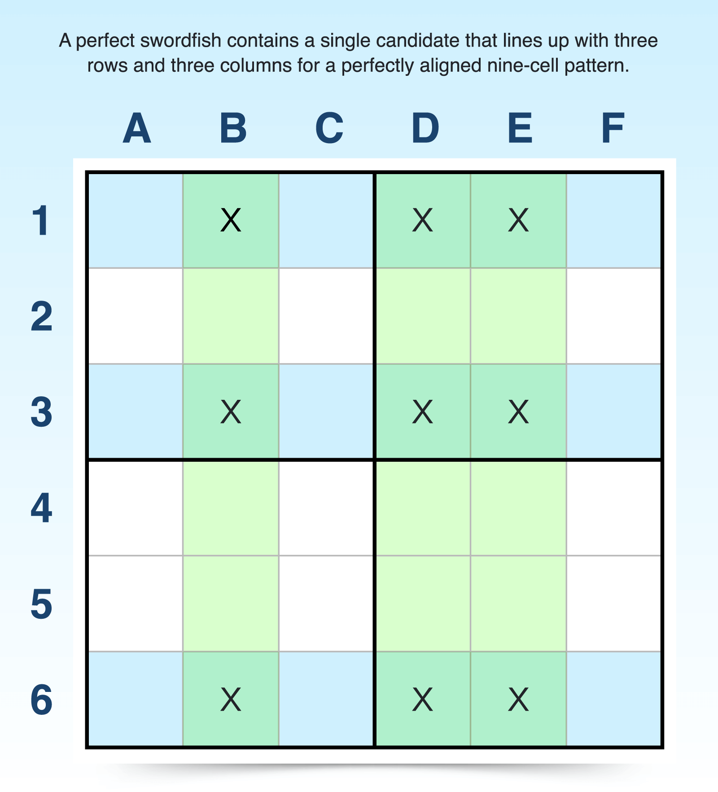
Embora o padrão "peixe-espada" seja uma extensão do padrão "X-wing", identificá-lo é um pouco como encontrar trios ocultos. Isso ocorre porque o padrão exige apenas que o candidato apareça em duas ou três células em cada uma das três linhas ou colunas.
Para identificar um "peixe-espada", procure os seguintes critérios:
Um único candidato aparece em exatamente três linhas ou exatamente três colunas. Por exemplo, o número 5 aparece em três linhas diferentes (4, 6 e 7).
Em cada uma dessas linhas (ou colunas), o candidato está limitado a apenas duas ou três células que se encontram nas mesmas três colunas. As três linhas são chamadas de conjuntos base. Neste exemplo, o candidato 5 aparece em duas células em cada linha (D4, I4, C6, I6, D7 e I7) e em três colunas alinhadas (C, D e I).
Se você encontrar um "peixe-espada", poderá eliminar esse candidato dos conjuntos de cobertura. Os conjuntos de cobertura são a unidade oposta àquela em que os conjuntos de base são encontrados, neste caso, as colunas C, D e I. Você pode eliminar o candidato 5 dessas colunas, com exceção das células do conjunto de base.
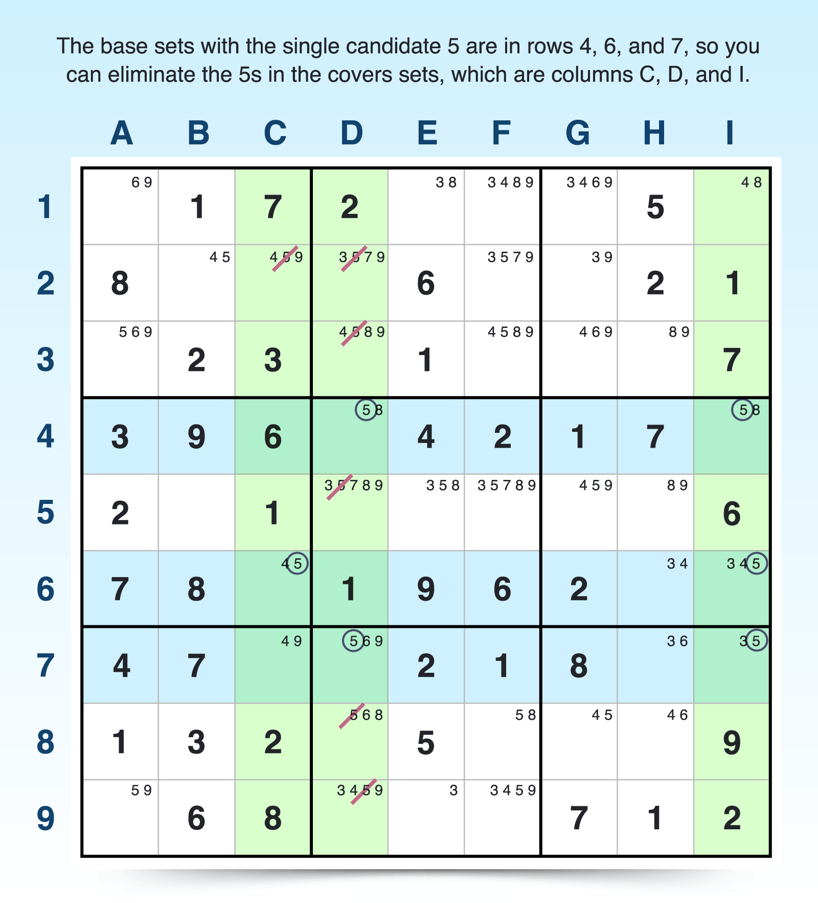
Assim como a asa X, um padrão de espadarte pode ser orientado de duas maneiras: horizontalmente (linhas) ou verticalmente (colunas). A orientação se refere a como o candidato se alinha — por colunas verticalmente ou por linhas horizontalmente — e determina onde você pode eliminar candidatos. Em um padrão de espadarte horizontal (alinhado por linhas), você elimina o candidato alvo das colunas, e em um padrão de espadarte vertical (alinhado por colunas), você elimina o candidato alvo das linhas.
Exemplos de Sudoku de Peixe-Espada
Para tirar o máximo proveito da estratégia do peixe-espada, comece usando marcas de lápis para anotar todos os candidatos possíveis em cada célula. Em seguida, procure padrões de peixe-espada e use-os para eliminar candidatos dos conjuntos de cobertura.
Os exemplos a seguir mostrarão como identificar padrões de peixe-espada em quebra-cabeças Sudoku desafiadores.
Padrão de peixe-espada com orientação horizontal
Um padrão de espadarte com orientação horizontal é um espadarte com um único candidato limitado a três linhas. Se você já marcou todos os candidatos em um quebra-cabeça, pode procurar linhas em que apenas dois ou três candidatos iguais aparecem.
Uma técnica para solucionadores avançados, o padrão de espadarte tem duas etapas simples para ser identificado e os candidatos eliminados:
Identifique um único candidato que apareça apenas duas ou três vezes em três linhas e em no máximo três colunas. Por exemplo, o candidato 4 aparece apenas duas ou três vezes nas linhas 2, 4 e 6 e se alinha com apenas três colunas: B, D e E. As linhas são os conjuntos básicos para o padrão do peixe-espada.
Elimine o candidato identificado nos conjuntos base (linhas) dos conjuntos de cobertura (colunas). Como o número 4 deve ocupar uma das células marcadas em cada linha, ele não pode aparecer em nenhum outro lugar nas colunas B, D ou E. Portanto, você pode eliminar o número 4 de qualquer outra célula nessas colunas (B1, D5 e E3) fora do padrão de espadarte.
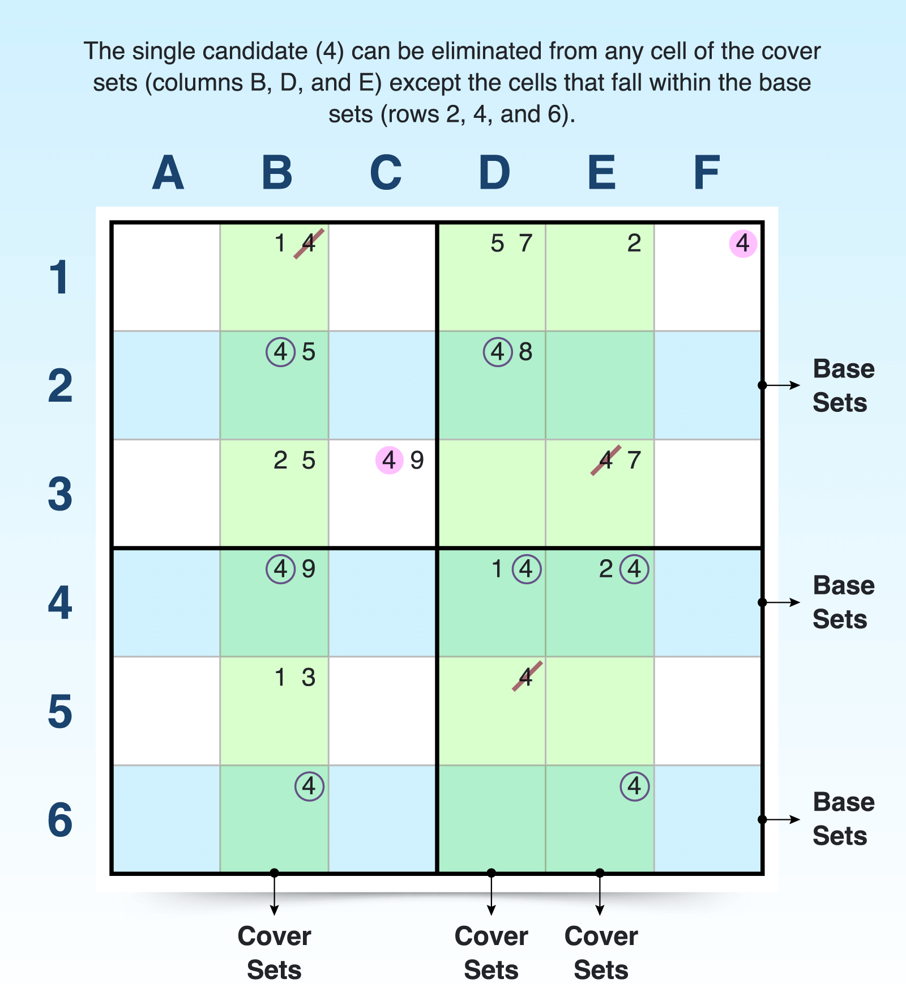
Padrão de peixe-espada com orientação vertical
O peixe-espada também pode ter orientação vertical e é igualmente fácil de identificar. Siga os mesmos passos que seguiria para a orientação horizontal, mas procure as colunas em vez das linhas para encontrar as bases:
Identifique um único candidato que apareça apenas duas ou três vezes em três colunas e em no máximo três linhas. Por exemplo, o candidato 7 aparece apenas duas ou três vezes nas colunas B, D e F e se alinha apenas em três linhas: 1, 3 e 5. Essas colunas são os conjuntos básicos para o padrão do peixe-espada.
Elimine o candidato identificado nos conjuntos base (colunas) dos conjuntos de cobertura (linhas). Como o 7 deve ocupar uma das células marcadas em cada coluna, ele não pode aparecer em nenhum outro lugar nas linhas 1, 3 ou 5. Portanto, você pode eliminar o 7 de qualquer outra célula nessas linhas (A5, C1 e E3) fora do padrão de espadarte.
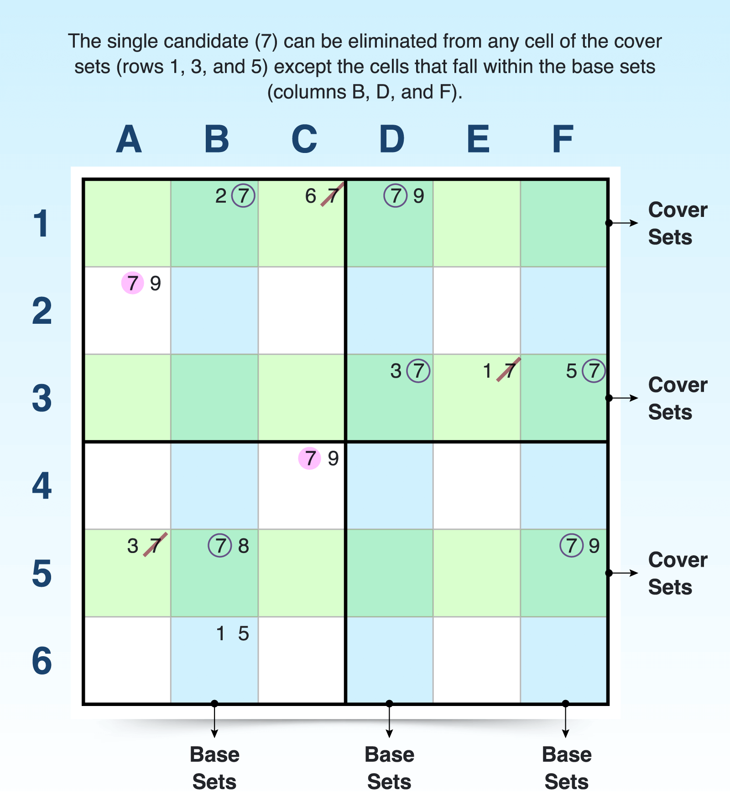
Utilizar novas estratégias pode ajudá-lo a vencer quebra-cabeças de Sudoku mais desafiadores e difíceis. Portanto, use esta técnica do peixe-espada para quebra-cabeças difíceis ou de nível especialista e elimine mais candidatos para que você possa resolver os quebra-cabeças de Sudoku mais rapidamente.
Estratégia de Sudoku X-Cycle + Exemplos
Os ciclos X são padrões lógicos poderosos que ajudam a eliminar candidatos em quebra-cabeças de Sudoku. Um tipo de cadeia de inferência alternada (AIC), eles usam ligações fortes e fracas alternadas entre as células de um único dígito, formando ciclos fechados ou cadeias de inferência lógica. Quando você encontra um ciclo X alternado adequado para um único candidato, pode eliminá-lo das células fora da cadeia (células fora da cadeia principal) que veem ambas as extremidades de uma ligação forte ou fraca.
Embora os ciclos X possam parecer complexos à primeira vista, eles seguem regras consistentes e podem levar a eliminações precisas sem necessidade de palpites. Depois de aprender a identificá-los, eles podem se tornar uma ferramenta confiável para resolver quebra-cabeças, especialmente em Sudokus difíceis.
Como Encontrar Ciclos X
Indicada para quebra-cabeças mais difíceis, a estratégia do ciclo X é semelhante à coloração simples do Sudoku e consiste em encontrar um ciclo de um único dígito composto por elos fortes e fracos alternados. Quando formadas corretamente, essas cadeias lógicas permitem eliminar candidatos seguindo as consequências de cada elo.
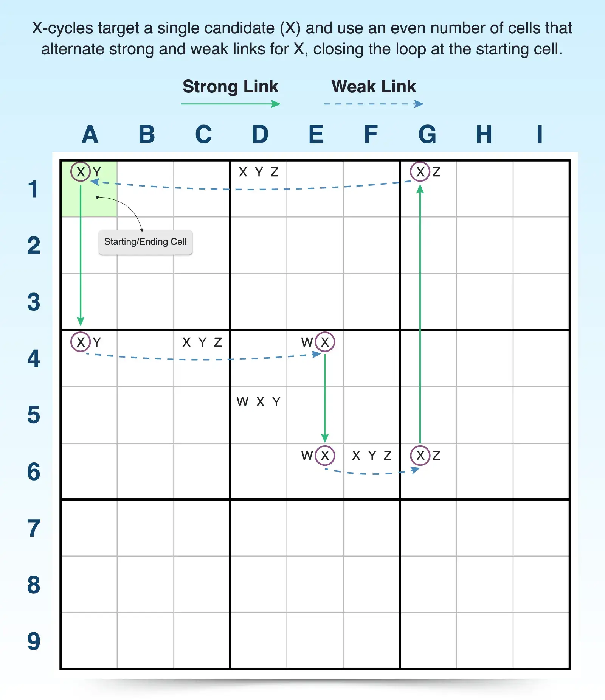
Embora os X-cycles façam parte de uma família mais ampla de técnicas de Sudoku conhecidas como Nice Loops, eles são um subconjunto específico e mais restrito, o que os torna mais fáceis de identificar e aplicar de forma consistente em quebra-cabeças mais difíceis.
Entenda os elos fortes e fracos
Você encontrará muita linguagem relacionada a "loops" que se sobrepõe a X-cycles, o que pode ser confuso. Loops e X-cycles são apenas tipos diferentes de cadeias de inferência alternadas (AIC) que dependem do uso de links fortes e fracos para criar loops ou padrões.
Uma ligação forte geralmente existe quando o mesmo candidato aparece em exatamente duas células dentro de uma unidade (linha, coluna ou bloco). Assim, a ligação criada entre os dois candidatos resulta em: se um for falso, o outro deve ser verdadeiro. A ligação é forte porque impõe uma verdade (veracidade) e funciona em ambas as direções para qualquer candidato em qualquer célula. Por exemplo, se o par isolado (3, 8) aparecer apenas duas vezes em uma linha, coluna ou bloco, isso resulta em uma ligação forte entre os dois 3 e uma ligação forte entre os dois 8, porque se um 3 não for a resposta, o outro deve ser a resposta. O mesmo vale para o candidato 8.
Uma ligação fraca é mais facilmente reconhecida quando o mesmo candidato aparece em mais de duas células em uma unidade. A ligação entre os múltiplos candidatos resulta no seguinte: se um for verdadeiro, o outro deve ser falso, mas não o contrário. A ligação é fraca porque não impõe uma veracidade nem confirma uma resposta, e não pode funcionar na direção oposta (provar que algo é verdadeiro) devido aos múltiplos candidatos. Por exemplo, se 8 for um candidato em três células de um bloco, se um dos 8 for a resposta, os outros devem ser falsos. No entanto, se um dos 8 não for a resposta, você não pode confirmá-lo como a resposta em outra célula do bloco porque você tem outros dois 8 nesse bloco.
Certifique-se de que o X-Cycle siga estas regras.
Os ciclos X são diferentes de outros AICs porque devem atender aos seguintes critérios:
Concentre-se em um único dígito: os ciclos X são cadeias de um único dígito. Todos os elos da cadeia representam posições candidatas para o mesmo dígito (candidato x) e a lógica da cadeia se aplica somente a esse dígito. Por exemplo, a grade abaixo traça as ligações entre o candidato 7 no quebra-cabeça.
Alterne entre ligações fortes e ligações fracas. O ciclo deve alternar estritamente entre ligações fortes e fracas. Ligações fortes oferecem uma inferência forte: se um candidato for falso, o outro deve ser verdadeiro. Ligações fracas oferecem uma inferência fraca: se um candidato for verdadeiro, o outro deve ser falso. Essa sequência alternada garante o fluxo lógico. Por exemplo, de A1 para A4 é forte; de A4 para E4 é fraco; de E4 para E6 é forte; de E6 para G6 é fraco; de G6 para G1 é forte; e de G1 de volta para A1 é fraco. Para alternar corretamente, você verá que os ciclos X contêm um número par de células no loop.
Pode fluir em qualquer direção. O tipo de ligação (forte ou fraca) permanece o mesmo, independentemente da direção em que você traça o ciclo. Isso significa que você pode analisar o ciclo a partir de qualquer ponto e ainda aplicar a lógica da ligação de forma consistente. Por exemplo, de A1 para G1 é fraca; de G1 para G6 é forte; de G6 para E6 é fraca; de E6 para E4 é forte; de E4 para A4 é fraca e de A4 de volta para A1 é forte.
Forme um laço fechado. As extremidades da cadeia estão na mesma célula (A1). Um ciclo X válido termina na célula inicial, formando um laço contínuo. Esse fechamento é necessário para a aplicação das regras de eliminação ou posicionamento com base nos tipos de ligação e na estrutura do laço.
É possível encontrar ciclos X até mesmo na lógica por trás de outras técnicas de resolução, como X-wings e alguns padrões de peixe-espada.
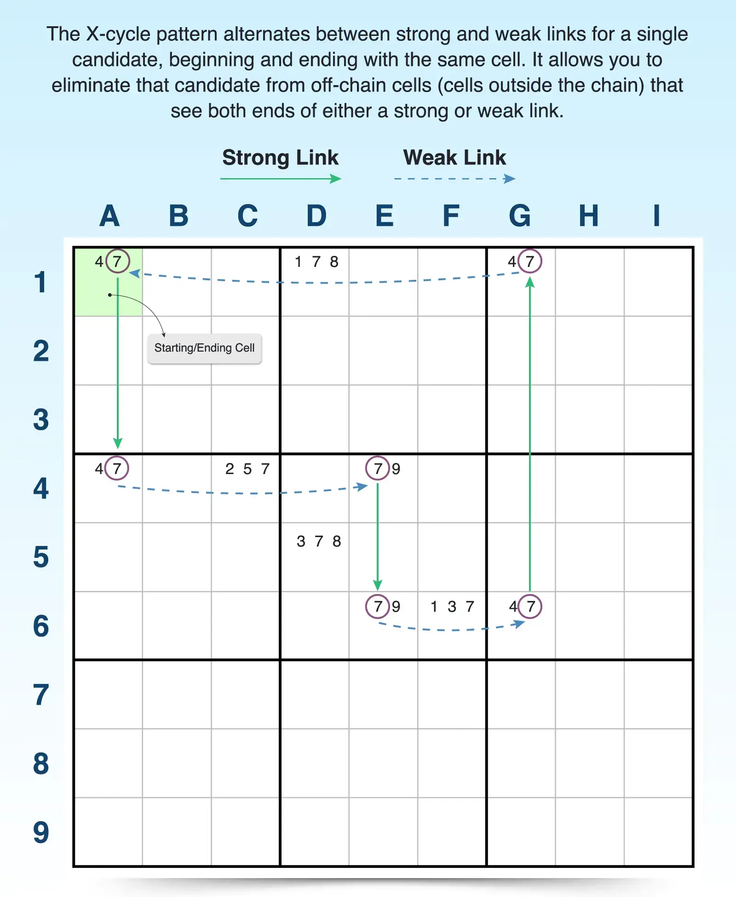
Exemplos de como usar a técnica de Sudoku X-Cycle
Os ciclos X seguem regras de ligação rigorosas que levam a conclusões úteis, mesmo em quebra-cabeças de nível especialista, permitindo eliminar um candidato de uma ou mais células.
Lembre-se de que ligações fortes tornam algo verdadeiro e ligações fracas tornam algo falso. Os ciclos X combinam ambos os tipos de ligações para prender a lógica em um loop e garantir um resultado. Estas seções apresentam um exemplo de cada tipo usando as regras dos ciclos X.
Regra 1 do Ciclo X: Eliminação com um Elo Fraco
Com a primeira regra do ciclo X, você pode eliminar um candidato com base em uma ligação fraca que é flanqueada por duas ligações fortes no ciclo. Se o ciclo X contém uma ligação fraca entre duas células, então um dos pontos finais da ligação fraca deve ser verdadeiro se for flanqueado por duas ligações fortes. Portanto, qualquer célula que veja esses dois pontos finais de ligação fraca não pode conter o candidato alvo no ciclo X.
Por exemplo, F3 e F5 são ambos pontos finais de uma ligação fraca flanqueada por ligações fortes em cada extremidade (C3 para F3 e F5 para B5). Portanto, 2 deve ser a resposta para F3 ou F5. Assim, qualquer célula que veja tanto F3 quanto F5 não pode ter o candidato 2. Isso permite que você elimine o candidato 2 de F1. Seguindo a mesma lógica, você também pode eliminar o candidato 2 de B1, C1 e G2.
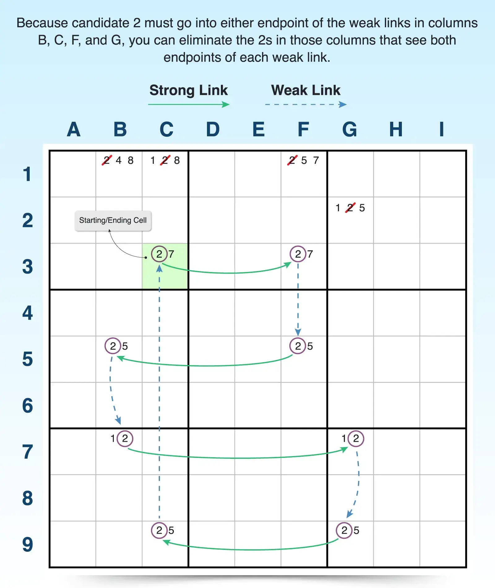
Regra 2 do Ciclo X: Eliminações com uma forte ligação
Com a próxima regra do ciclo X, você pode eliminar candidatos que interagem com ambas as extremidades de uma ligação forte. Em uma ligação forte (par conjugado), o candidato deve ser a resposta em uma dessas células. Se o mesmo candidato em outra célula interage com ambas as extremidades, você pode eliminar o candidato dessa outra célula.
Por exemplo, as células D5 e F6 contêm o candidato alvo 7 e compartilham um bloco 3x3 com as extremidades da ligação forte para o candidato 7 (células E4 e E6). Como 7 deve ser a resposta para E4 ou E6, você pode eliminar o candidato 7 em quaisquer células que interajam com ambas as extremidades de E4 e E6. Sabendo o que você sabe sobre a Regra 1 do ciclo X, você também pode eliminar qualquer 7 que interaja com duas extremidades de uma ligação fraca.
 Técnicas para a Sabedoria Quadrada
A versão atual do JSudoku não implementa nenhuma técnica específica para o Square Wisdom. No entanto, a maioria das técnicas para o Killer Sudoku e outras restrições em combinações também se aplicam ao Square Wisdom. Isso inclui: Interseções complexas (caso regular), Células apontando, Soma de células internas e externas, Combinações ímpares, Inclusões obrigatórias, Subconjuntos complexos nus e ocultos, Combinações conflitantes, Cadeia XY complexa...
Aqui estão algumas técnicas específicas do Square Wisdom que podem ser adicionadas em uma versão futura do JSudoku:
Interseções estendidas
Quando uma gaiola de soma ou produto com possíveis repetições precisa incluir um candidato várias vezes, esse candidato pode ser bloqueado para algumas linhas ou colunas, dependendo do formato da gaiola.
Exemplo: Gaiola em forma de L com 3 células 5+ em r1c12+r2c1 = {1(13|22)}. Como nem r1c12 nem r12c1 podem ser {22}, ambos os grupos de 2 células devem incluir um 1, que é bloqueado em r1c12 para r1 e em r12c1 para c1.
X-Wing complexo, Swordfish...
Semelhante às interseções complexas. Quando uma gaiola precisa incluir um candidato várias vezes, ela pode ser bloqueada em todas as suas linhas e/ou colunas.
Exemplo: Gaiola em forma de L com 4 células 8+ em r1c123+r2c1 = {12(14|23)}. Como r1c123 não pode ser {223}, o 1 está bloqueado para r1 e r2.
Exemplo: gaiola quadrada com 4 células 15x em r12c12 = {1135}. O 1 está bloqueado para r1, r2, c1 e c2. Dois X-Wings para uma gaiola!
Pessoas, Outies...
A soma regular de Innies e Outies para Killer também se aplica ao Square Wisdom. Podemos também preencher gaiolas de produtos com uma combinação única, somando todos os seus candidatos. Isso já é suportado pelo JSudoku.
Essas técnicas podem ser estendidas às gaiolas de produtos. Isso não é suportado atualmente pelo JSudoku.
Para o formato 6x6, isso raramente é útil, já que a maioria dos produtos possui poucas combinações e outras técnicas podem ser utilizadas. No entanto, pode ser útil para tamanhos maiores, como 9x9.
Isso se traduz em:
soma - produto
Regra do 21 (ou 45) - Regra do 6! = 720 (ou 9! = 362880)
Subtração: A-B - Divisão: A/B
Subtração: A-B - Divisão: A/B
Multiplicação: AxConst - Potência: A^Const
Dividir: A/Const - Raiz: Const √ A (= A^(1/Const))
Exemplo simples para 6x6: r1c12 = 6x; r1c345 = 24x. O produto dos innies para r1 resulta em: r1c6 = 720 / (6x24) = 5
Também podemos conectar:
Em termos de soma, diferença e quociente, quando temos uma combinação única, podemos multiplicar todos os seus componentes candidatos. Por exemplo, 2 células com soma 4 + 1 = 1 + 3 resultam no produto 1 x 3 = 3.
Subconjunto nu obtido pela multiplicação de todos os seus candidatos
Células resolvidas
Técnicas para Maior/Menor Que e Não Consecutivos
Essas variantes impõem restrições a pares de células, conhecidas como restrições binárias, um tema bem estudado em Problemas de Satisfação de Restrições (CSP). Sempre que uma célula é resolvida, a relação é automaticamente propagada para a outra célula não resolvida. Portanto, esses solucionadores não são usados para este caso simples conhecido como Verificação Antecipada. Você pode desativar essa propagação automática em Opções > Atualizar Combinações após a Resolução.
Sincronização Maior/Menor
Este solucionador irá diminuir o valor máximo e/ou aumentar o valor mínimo para cada par de células restringido por uma relação "Maior que" ou "Menor que". Ele repete o processo até que nenhuma alteração seja feita.
Observação: ele considera apenas duas células por vez. Quando uma célula deve ser maior que várias células vizinhas, seu valor mínimo deve ser maior que a soma dos valores mínimos das células vizinhas. O inverso também é válido. Por exemplo:
R1C1 < R1C2 > R1C3
R1C2 deve ser >= 3, pois 2 forçaria tanto R1C1=1 quanto R1C3=1, o que não é possível.
Este solucionador não detecta esses casos e deixará o valor mínimo abaixo da soma dos valores mínimos válidos. Para este exemplo, ele definirá R1C2 >= 2, e não 3.Não consecutivos
Não consecutivos
Este solucionador restringe as possibilidades para um par de células não resolvidas, restringidas por uma relação consecutiva ou não consecutiva.
Para relações não consecutivas, ele verifica os seguintes casos:
Uma única célula com apenas dois candidatos consecutivos {X, X+1} -> elimina {X, X+1} das células adjacentes
ex: R5C5 = {45} -> R46C5 e R5C46 <> {45}
Nota: Isso se aplica apenas a células que são vizinhas. Isso sempre ocorre para células adjacentes não consecutivas, mas pode não ocorrer para algumas relações não consecutivas no xadrez, como a relação de cavalo não consecutiva.
Uma única célula com apenas dois candidatos 'duplamente' consecutivos {X-1, X+1} -> elimina X das células adjacentes
ex.: R5C5 = {46} -> R46C5 e R5C46 <> 5
Nota: Isso é sempre aplicável, mesmo para não-consequências no xadrez quando as células não são vizinhas.
Uma única célula com apenas três candidatos consecutivos {X-1, X, X+1} -> elimina X das células adjacentes
ex.: R5C5 = {456} -> R46C5 e R5C46 <> 5
Nota: Isso é aplicável apenas para células vizinhas. Isso sempre ocorre para não-consequências adjacentes, mas pode não ocorrer para algumas não-consequências no xadrez, como a não-consequência do cavalo.
Para pares de células consecutivas, restringe a célula à união das possibilidades consecutivas da outra célula. Por exemplo:
Alguma célula = {45} -> célula(s) consecutiva(s) = {35} U {46} = {3456}
Alguma célula = {125} -> célula(s) consecutiva(s) = {2} U {13} U {46} = {12346}
Bloqueado Não Consecutivo
Isso só se aplica a pares de células não consecutivas. Não se aplica a pares de células consecutivas.
Se um candidato X para uma determinada casa estiver bloqueado em duas células adjacentes -> elimine {X-1, X+1} dessas duas células.
Exemplo: 5 de R5 bloqueado em R5C45 -> R5C45 <> {46}
Se um candidato X para uma determinada casa estiver bloqueado em duas células 'próximas' não adjacentes -> elimine {X-1, X+1} das células adjacentes a ambas.
As células podem estar em uma linha ou coluna com uma célula entre elas; podemos eliminar candidatos da célula intermediária.
Exemplo: 5 de C5 bloqueados em R24C5 -> R3C5 <> {46}
As células podem estar no mesmo bloco/noneto, tocando-se pelos cantos; podemos eliminar candidatos das duas células adjacentes a ambas.
Exemplo: 5 de N5 bloqueados em R4C4, R5C5 -> R4C5 e R5C4 <> {46}
Isso também funciona para diagonais não consecutivas quando algum candidato está bloqueado em duas células próximas.
Exemplo: 5 de D bloqueado em R3C3,R4C4 -> R3C4 e R4C3 <> {46}
Se algum candidato X para alguma casa estiver bloqueado em três células adjacentes -> elimine {X-1,X+1} da célula do meio
Exemplo: 5 de R5 bloqueado em R5C345 -> R5C4 <> {46}
Exemplo: 5 de N5 bloqueado em R5C45,R6C4 -> R5C4 <> {46}
Se algum candidato X para algum bloco/noneto estiver bloqueado em três células não adjacentes 'próximas' -> elimine {X-1,X+1} das células adjacentes a todas elas
Para que isso seja útil, as células devem estar no mesmo bloco/noneto em um padrão de verificação, em forma de V.
Exemplo: 5 de N5 bloqueado em R4C46,R5C5 -> R4C5 <> {46}
Este padrão de verificação é frequente, mas raramente produtivo
Cadeia consecutiva
Quando várias células adjacentes formam uma cadeia de células consecutivas, a(s) célula(s) do meio ficam mais restritas.
Por exemplo:
R1C1 | R1C2 | R1C3
R1C2 deveria ser <> {19}, já que 1 forçaria tanto R1C1=2 quanto R1C3=2, o que não é possível. O mesmo vale para 9.
Isso ainda não foi implementado como uma técnica automatizada. Você pode selecionar a cadeia de células consecutivas e clicar com o botão direito do mouse enquanto pressiona Alt para Atualizar Combinações > Células Selecionadas.
Asa XYZ
Esta é uma extensão da Asa Y ou (Asa XY). John MacLeod a define como "três células que contêm apenas três números diferentes entre si, mas que estão fora dos limites de uma linha/coluna/quadrado, com uma das células (o 'ápice' ou 'dobradiça') sendo capaz de ver as outras duas; essas outras duas tendo apenas um número em comum; e o ápice tendo todos os três números como candidatos".
Conclui-se, portanto, que uma ou outra das três células deve conter o número comum; e, consequentemente, qualquer célula estranha (só podem existir duas!) que "veja" todas as três células do Trio Estendido não pode ter esse número como seu valor verdadeiro.
O nome deriva dos três números X, Y e Z necessários na dobradiça. As células externas da formação serão XZ e YZ, sendo Z o número comum.
Técnicas para a Sabedoria Quadrada
A versão atual do JSudoku não implementa nenhuma técnica específica para o Square Wisdom. No entanto, a maioria das técnicas para o Killer Sudoku e outras restrições em combinações também se aplicam ao Square Wisdom. Isso inclui: Interseções complexas (caso regular), Células apontando, Soma de células internas e externas, Combinações ímpares, Inclusões obrigatórias, Subconjuntos complexos nus e ocultos, Combinações conflitantes, Cadeia XY complexa...
Aqui estão algumas técnicas específicas do Square Wisdom que podem ser adicionadas em uma versão futura do JSudoku:
Interseções estendidas
Quando uma gaiola de soma ou produto com possíveis repetições precisa incluir um candidato várias vezes, esse candidato pode ser bloqueado para algumas linhas ou colunas, dependendo do formato da gaiola.
Exemplo: Gaiola em forma de L com 3 células 5+ em r1c12+r2c1 = {1(13|22)}. Como nem r1c12 nem r12c1 podem ser {22}, ambos os grupos de 2 células devem incluir um 1, que é bloqueado em r1c12 para r1 e em r12c1 para c1.
X-Wing complexo, Swordfish...
Semelhante às interseções complexas. Quando uma gaiola precisa incluir um candidato várias vezes, ela pode ser bloqueada em todas as suas linhas e/ou colunas.
Exemplo: Gaiola em forma de L com 4 células 8+ em r1c123+r2c1 = {12(14|23)}. Como r1c123 não pode ser {223}, o 1 está bloqueado para r1 e r2.
Exemplo: gaiola quadrada com 4 células 15x em r12c12 = {1135}. O 1 está bloqueado para r1, r2, c1 e c2. Dois X-Wings para uma gaiola!
Pessoas, Outies...
A soma regular de Innies e Outies para Killer também se aplica ao Square Wisdom. Podemos também preencher gaiolas de produtos com uma combinação única, somando todos os seus candidatos. Isso já é suportado pelo JSudoku.
Essas técnicas podem ser estendidas às gaiolas de produtos. Isso não é suportado atualmente pelo JSudoku.
Para o formato 6x6, isso raramente é útil, já que a maioria dos produtos possui poucas combinações e outras técnicas podem ser utilizadas. No entanto, pode ser útil para tamanhos maiores, como 9x9.
Isso se traduz em:
soma - produto
Regra do 21 (ou 45) - Regra do 6! = 720 (ou 9! = 362880)
Subtração: A-B - Divisão: A/B
Subtração: A-B - Divisão: A/B
Multiplicação: AxConst - Potência: A^Const
Dividir: A/Const - Raiz: Const √ A (= A^(1/Const))
Exemplo simples para 6x6: r1c12 = 6x; r1c345 = 24x. O produto dos innies para r1 resulta em: r1c6 = 720 / (6x24) = 5
Também podemos conectar:
Em termos de soma, diferença e quociente, quando temos uma combinação única, podemos multiplicar todos os seus componentes candidatos. Por exemplo, 2 células com soma 4 + 1 = 1 + 3 resultam no produto 1 x 3 = 3.
Subconjunto nu obtido pela multiplicação de todos os seus candidatos
Células resolvidas
Técnicas para Maior/Menor Que e Não Consecutivos
Essas variantes impõem restrições a pares de células, conhecidas como restrições binárias, um tema bem estudado em Problemas de Satisfação de Restrições (CSP). Sempre que uma célula é resolvida, a relação é automaticamente propagada para a outra célula não resolvida. Portanto, esses solucionadores não são usados para este caso simples conhecido como Verificação Antecipada. Você pode desativar essa propagação automática em Opções > Atualizar Combinações após a Resolução.
Sincronização Maior/Menor
Este solucionador irá diminuir o valor máximo e/ou aumentar o valor mínimo para cada par de células restringido por uma relação "Maior que" ou "Menor que". Ele repete o processo até que nenhuma alteração seja feita.
Observação: ele considera apenas duas células por vez. Quando uma célula deve ser maior que várias células vizinhas, seu valor mínimo deve ser maior que a soma dos valores mínimos das células vizinhas. O inverso também é válido. Por exemplo:
R1C1 < R1C2 > R1C3
R1C2 deve ser >= 3, pois 2 forçaria tanto R1C1=1 quanto R1C3=1, o que não é possível.
Este solucionador não detecta esses casos e deixará o valor mínimo abaixo da soma dos valores mínimos válidos. Para este exemplo, ele definirá R1C2 >= 2, e não 3.Não consecutivos
Não consecutivos
Este solucionador restringe as possibilidades para um par de células não resolvidas, restringidas por uma relação consecutiva ou não consecutiva.
Para relações não consecutivas, ele verifica os seguintes casos:
Uma única célula com apenas dois candidatos consecutivos {X, X+1} -> elimina {X, X+1} das células adjacentes
ex: R5C5 = {45} -> R46C5 e R5C46 <> {45}
Nota: Isso se aplica apenas a células que são vizinhas. Isso sempre ocorre para células adjacentes não consecutivas, mas pode não ocorrer para algumas relações não consecutivas no xadrez, como a relação de cavalo não consecutiva.
Uma única célula com apenas dois candidatos 'duplamente' consecutivos {X-1, X+1} -> elimina X das células adjacentes
ex.: R5C5 = {46} -> R46C5 e R5C46 <> 5
Nota: Isso é sempre aplicável, mesmo para não-consequências no xadrez quando as células não são vizinhas.
Uma única célula com apenas três candidatos consecutivos {X-1, X, X+1} -> elimina X das células adjacentes
ex.: R5C5 = {456} -> R46C5 e R5C46 <> 5
Nota: Isso é aplicável apenas para células vizinhas. Isso sempre ocorre para não-consequências adjacentes, mas pode não ocorrer para algumas não-consequências no xadrez, como a não-consequência do cavalo.
Para pares de células consecutivas, restringe a célula à união das possibilidades consecutivas da outra célula. Por exemplo:
Alguma célula = {45} -> célula(s) consecutiva(s) = {35} U {46} = {3456}
Alguma célula = {125} -> célula(s) consecutiva(s) = {2} U {13} U {46} = {12346}
Bloqueado Não Consecutivo
Isso só se aplica a pares de células não consecutivas. Não se aplica a pares de células consecutivas.
Se um candidato X para uma determinada casa estiver bloqueado em duas células adjacentes -> elimine {X-1, X+1} dessas duas células.
Exemplo: 5 de R5 bloqueado em R5C45 -> R5C45 <> {46}
Se um candidato X para uma determinada casa estiver bloqueado em duas células 'próximas' não adjacentes -> elimine {X-1, X+1} das células adjacentes a ambas.
As células podem estar em uma linha ou coluna com uma célula entre elas; podemos eliminar candidatos da célula intermediária.
Exemplo: 5 de C5 bloqueados em R24C5 -> R3C5 <> {46}
As células podem estar no mesmo bloco/noneto, tocando-se pelos cantos; podemos eliminar candidatos das duas células adjacentes a ambas.
Exemplo: 5 de N5 bloqueados em R4C4, R5C5 -> R4C5 e R5C4 <> {46}
Isso também funciona para diagonais não consecutivas quando algum candidato está bloqueado em duas células próximas.
Exemplo: 5 de D bloqueado em R3C3,R4C4 -> R3C4 e R4C3 <> {46}
Se algum candidato X para alguma casa estiver bloqueado em três células adjacentes -> elimine {X-1,X+1} da célula do meio
Exemplo: 5 de R5 bloqueado em R5C345 -> R5C4 <> {46}
Exemplo: 5 de N5 bloqueado em R5C45,R6C4 -> R5C4 <> {46}
Se algum candidato X para algum bloco/noneto estiver bloqueado em três células não adjacentes 'próximas' -> elimine {X-1,X+1} das células adjacentes a todas elas
Para que isso seja útil, as células devem estar no mesmo bloco/noneto em um padrão de verificação, em forma de V.
Exemplo: 5 de N5 bloqueado em R4C46,R5C5 -> R4C5 <> {46}
Este padrão de verificação é frequente, mas raramente produtivo
Cadeia consecutiva
Quando várias células adjacentes formam uma cadeia de células consecutivas, a(s) célula(s) do meio ficam mais restritas.
Por exemplo:
R1C1 | R1C2 | R1C3
R1C2 deveria ser <> {19}, já que 1 forçaria tanto R1C1=2 quanto R1C3=2, o que não é possível. O mesmo vale para 9.
Isso ainda não foi implementado como uma técnica automatizada. Você pode selecionar a cadeia de células consecutivas e clicar com o botão direito do mouse enquanto pressiona Alt para Atualizar Combinações > Células Selecionadas.
Asa XYZ
Esta é uma extensão da Asa Y ou (Asa XY). John MacLeod a define como "três células que contêm apenas três números diferentes entre si, mas que estão fora dos limites de uma linha/coluna/quadrado, com uma das células (o 'ápice' ou 'dobradiça') sendo capaz de ver as outras duas; essas outras duas tendo apenas um número em comum; e o ápice tendo todos os três números como candidatos".
Conclui-se, portanto, que uma ou outra das três células deve conter o número comum; e, consequentemente, qualquer célula estranha (só podem existir duas!) que "veja" todas as três células do Trio Estendido não pode ter esse número como seu valor verdadeiro.
O nome deriva dos três números X, Y e Z necessários na dobradiça. As células externas da formação serão XZ e YZ, sendo Z o número comum.
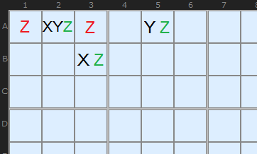
Vale a pena comparar a asa XYZ com a asa Y por um momento. Vamos remover o candidato Z da dobradiça. O diagrama à direita mostra o resultado. Com apenas dois Zs nas células da pinça, obtemos mais células em outros locais que poderiam potencialmente conter um Z a ser eliminado. A sobreposição é maior com menos células para alinhar.
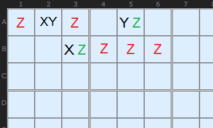
n this example the candidate number is 1 and F9 is the Hinge. It can see a 1/2 in D9 and a 1/4 in F1. We can reason this way: If D9 contains a 2 then F1 and F9 become a naked pair of 1/4 - and the naked pair rule applies. Same with F1. If that's a 4 then D9 and F9 become a naked pair of 1/2 each. If any of the three are 1 then 1 is still part of the formation. Any 1 visible to all three cells must be removed, in this case in F7.
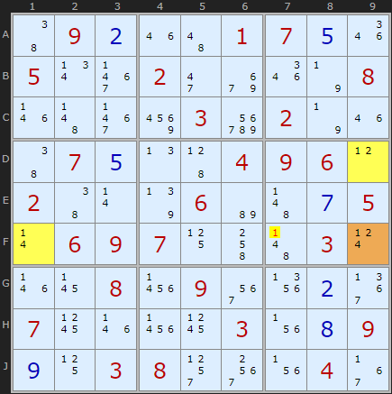
The second example shows an XYZ-Wings based on a row and a box.
The hinge cell is on E8 and the common candidate is 6. The 6 in E9 can see all the 6s in the whole XYZ formation.
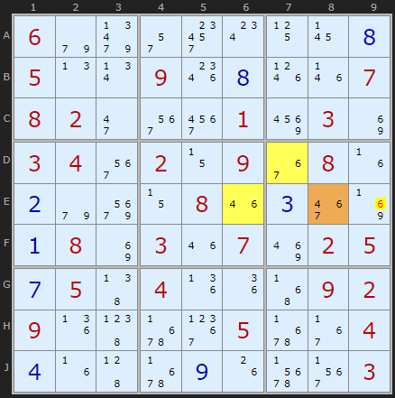
Exclusão de pares alinhados
A lógica de um problema XYZ-Wing é completamente diferente e muito mais simples do que a Exclusão de Pares Alinhados (APE) descrita abaixo, mas o curioso é que o XYZ-Wing é um subconjunto completo do APE. Todo problema XYZ-Wing pode ser resolvido pelo APE (mas o inverso não é verdadeiro).
Técnica do Sudoku Y-Wing: Como Encontrar e Exemplos
Usada como um eliminador de candidatos, a estratégia Y-wing é semelhante à técnica X-wing, mas utiliza três células em vez de quatro. Ela pode ajudar a encontrar respostas em outras células ou causar uma reação em cadeia de eliminação para restringir ainda mais os candidatos possíveis.
Seja você um iniciante na exploração de estratégias de Sudoku ou um jogador avançado, a técnica Y-wing é adequada para níveis de dificuldade a partir do intermediário. Se você deseja dominar essa técnica, nosso guia oferece exemplos e instruções passo a passo para encontrar padrões Y-wing e aplicar a estratégia ao jogar Sudoku.
Simplificando a técnica da asa em Y
Para identificar uma asa em Y, examine a grade em busca de três células com dois valores (células com apenas dois candidatos) que formam uma cadeia condicional de duas etapas (se um candidato for a resposta para uma célula, o outro candidato deve ser a resposta para outra célula). Para formar essa cadeia, as três células com dois valores devem compartilhar dois candidatos de um grupo de três candidatos em comum.
Se você estiver familiarizado com a técnica da asa em X, pode presumir que o nome desta estratégia se refere à criação de um formato de Y ao conectar as células, mas nem sempre se parece com a letra. O nome se refere aos candidatos nas três células com dois valores, assim como as letras são atribuídas às incógnitas na álgebra, e o x e o y representam candidatos diferentes. É por isso que a técnica também é chamada de asa xy.
Se você conhece a seguinte terminologia do Sudoku, pode entender a relação entre essas três células e como elas criam o padrão da asa em Y:
Célula pivô: Uma célula bivalorada possui os candidatos x e y. Ela também compartilha uma unidade com outras duas células bivaloradas que não compartilham uma unidade entre si, chamadas células pinça. Por exemplo, a célula C1 possui apenas dois candidatos, x e y.
Célula de pinça 1: Uma célula bivalorada tem candidatos x e z, compartilhando um candidato (x) e também uma unidade com a célula pivô. Por exemplo, F1 tem um x e compartilha a mesma linha (1) que C1.
Célula de pinça 2: Outra célula bivalorada possui candidatos y e z, compartilhando um candidato (y), bem como uma unidade com a célula pivô, mas não compartilha uma unidade com a outra célula de pinça. Por exemplo, B2 possui um candidato y e compartilha o mesmo bloco 3x3 que C1, mas não compartilha uma unidade com F1.
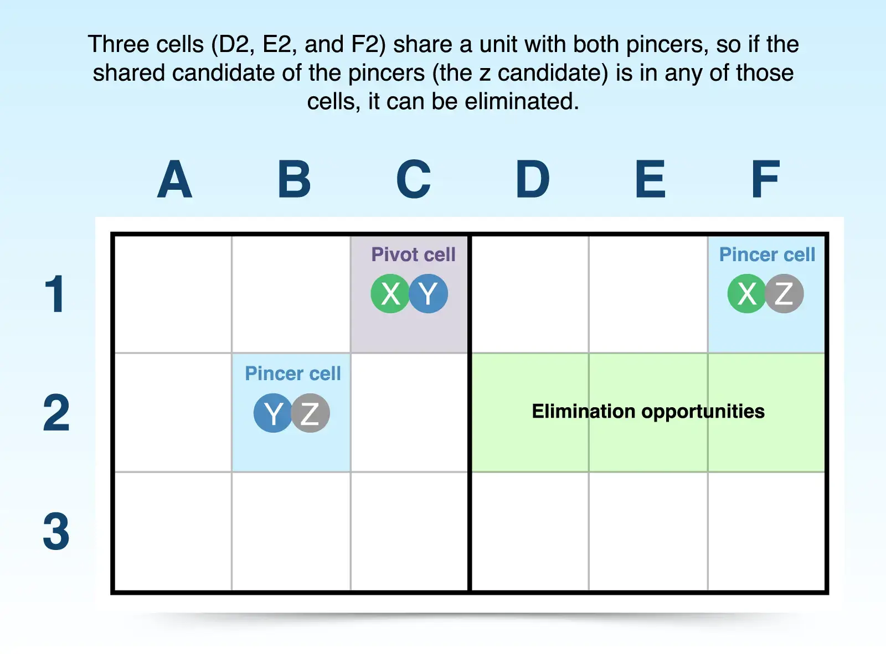
Uma das chaves do conceito de asa em Y é o terceiro candidato (z), que é compartilhado entre as células da pinça. Por exemplo, o candidato z é compartilhado entre B2 e F1. Os valores x e y estabelecem a relação entre a célula pivô e as pinças, mas o terceiro candidato une as duas pinças.
A partir dessas relações, você tem uma cadeia condicional de duas etapas que ajuda a eliminar candidatos:
Se C1 for x, então F1 deve ser z.
Se C1 for y, então B2 deve ser z.
Portanto, ou B2 ou F1 deve ter como resposta z. Como essa resposta está vinculada a um desses dois candidatos, qualquer célula que compartilhe uma unidade (linha, coluna, bloco 3x3) com ambas as pinças não pode logicamente ter como resposta z. Assim, você pode eliminar z de qualquer uma dessas células.
Por exemplo, as células D2, E2 e F2 compartilham uma unidade com B2 (linha 2) e uma unidade com F1 (o mesmo bloco 3x3). Portanto, essas três células não podem logicamente ter z como resposta, o que significa que você pode eliminar esse candidato dessas células.
Como encontrar um Sudoku Y-Wing
Estratégias avançadas como a formação em Y são fáceis de encontrar e usar se você seguir estes passos simples:
Encontre a célula pivô. A célula pivô é a célula bivalorada com os candidatos xy. Ela também compartilha uma unidade com outras duas células bivaloradas que não compartilham uma unidade entre si. Por exemplo, C1 é uma célula bivalorada que "enxerga" (compartilha uma unidade com) a célula bivalorada em F1 porque elas compartilham uma linha, mas também enxerga uma célula bivalorada em uma unidade separada, a célula B3 no mesmo bloco 3x3 que C1.
Confirme as células da pinça. As células da pinça têm dois candidatos. Elas compartilham um candidato cada com a célula pivô, e o segundo candidato das células da pinça é um candidato comum. Portanto, uma tem os candidatos xz e a outra tem os candidatos yz. Por exemplo, C1 compartilha um candidato 4 com B3 e um candidato 7 com F1, e B3 e F1 têm um candidato 1 cada. Portanto, B3 e F1 são células da pinça para C1.
Encontre o candidato a ser eliminado. Devido à relação entre as três células, você pode eliminar o candidato comum entre as pinças em qualquer célula que ambas as pinças vejam. A célula pivô prova que o candidato compartilhado apenas com as pinças deve ser uma resposta em uma das pinças. Por exemplo:
Se C1 for 4, então B3 será 1.
Se C1 for 7, então F1 será 1.
 Portanto, 1 precisa ser uma resposta em B3 ou F1, e qualquer candidato 1 em qualquer célula que essas duas pinças possam ver pode ser eliminado. Por exemplo, o candidato 1 em E3 pode ser eliminado porque compartilha a mesma linha que B3 e o mesmo bloco 3x3 que F1, e o candidato 1 em F3 pode ser eliminado porque compartilha a mesma linha que B3 e a mesma coluna que F1. No entanto, o candidato 1 em B2 não pode ser eliminado porque compartilha uma unidade B3, mas não com F1.
Você não encontrará células em Y em todos os quebra-cabeças, mas quaisquer células com dois valores que não sejam pares isolados podem ser células em Y. Portanto, verifique se elas têm candidatos em comum para criar o padrão.
Observe que você pode encontrar uma célula em Y, mas não conseguir eliminar candidatos. Se isso acontecer, não se preocupe - você não perdeu seu tempo. Quanto mais células em Y você identificar, mais fácil será o processo, o que pode levar a uma grande recompensa que desbloqueia um quebra-cabeça no qual você está travado.
Exemplos de asa em Y
Ao usar essa técnica, você descobrirá rapidamente que quanto mais próximas as três células da asa em Y estiverem, mais células ambas as pinças candidatas verão. Isso significa que você pode eliminar mais candidatos do que quando as células estão mais distantes. Esses exemplos de asas em Y ajudarão você a entender como a proximidade afeta o número de candidatos que você pode eliminar.
Asa em Y nas proximidades
As estruturas em forma de Y são mais fáceis de identificar quando estão próximas umas das outras, como esta, e geralmente oferecem mais células compartilhadas nas quais os candidatos podem ser eliminados. Considere este exemplo:
Portanto, 1 precisa ser uma resposta em B3 ou F1, e qualquer candidato 1 em qualquer célula que essas duas pinças possam ver pode ser eliminado. Por exemplo, o candidato 1 em E3 pode ser eliminado porque compartilha a mesma linha que B3 e o mesmo bloco 3x3 que F1, e o candidato 1 em F3 pode ser eliminado porque compartilha a mesma linha que B3 e a mesma coluna que F1. No entanto, o candidato 1 em B2 não pode ser eliminado porque compartilha uma unidade B3, mas não com F1.
Você não encontrará células em Y em todos os quebra-cabeças, mas quaisquer células com dois valores que não sejam pares isolados podem ser células em Y. Portanto, verifique se elas têm candidatos em comum para criar o padrão.
Observe que você pode encontrar uma célula em Y, mas não conseguir eliminar candidatos. Se isso acontecer, não se preocupe - você não perdeu seu tempo. Quanto mais células em Y você identificar, mais fácil será o processo, o que pode levar a uma grande recompensa que desbloqueia um quebra-cabeça no qual você está travado.
Exemplos de asa em Y
Ao usar essa técnica, você descobrirá rapidamente que quanto mais próximas as três células da asa em Y estiverem, mais células ambas as pinças candidatas verão. Isso significa que você pode eliminar mais candidatos do que quando as células estão mais distantes. Esses exemplos de asas em Y ajudarão você a entender como a proximidade afeta o número de candidatos que você pode eliminar.
Asa em Y nas proximidades
As estruturas em forma de Y são mais fáceis de identificar quando estão próximas umas das outras, como esta, e geralmente oferecem mais células compartilhadas nas quais os candidatos podem ser eliminados. Considere este exemplo:
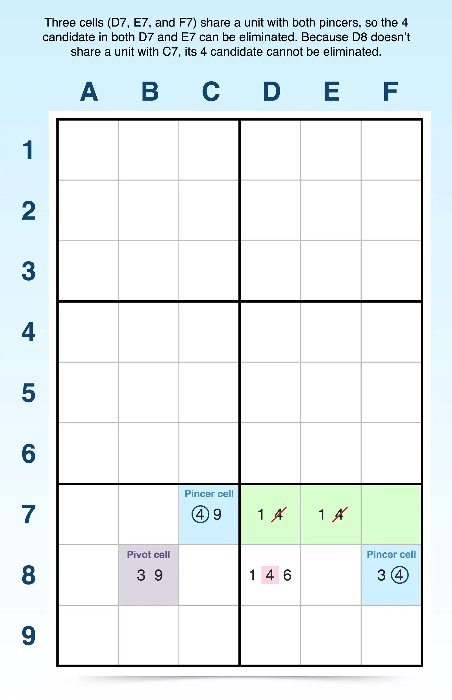
Célula pivô: A célula B8 contém apenas dois candidatos (3, 9) e compartilha um candidato com C7 (9) e F8 (3). Ela também compartilha uma unidade com C7 (bloco 3x3) e uma unidade separada com F8 (linha 8).
Célula de pinça 1: A célula C7 tem apenas dois candidatos (4, 9). Um candidato (9) é compartilhado com a célula pivô (F8) e um candidato (4) com a outra célula de pinça (F8). A célula C7 compartilha uma unidade (bloco 3x3) com a célula pivô, B8, mas não compartilha uma unidade com F8.
Célula de pinça 2: A célula F8 tem apenas dois candidatos (3, 4). Um candidato (3) é compartilhado com a célula pivô (F8) e um candidato (4) com a outra célula de pinça (C7). F8 compartilha uma unidade (linha 8) com a célula pivô, B8, mas não compartilha uma unidade com C7, a outra célula de pinça.
Possibilidades de eliminação: As três células destacadas na linha 7 (D7, E7 e F7) mostram quantas células ambas as pinças enxergam. Se alguma dessas células tiver o candidato 4 (compartilhado pelas células da pinça), esse candidato pode ser eliminado. Portanto, as células D7 e E7 podem ter seus 4s removidos, mas não a D8. A célula D8 não pode ter o 4 eliminado porque, embora compartilhe uma unidade com uma célula da pinça (a mesma 3x3 que F8), ela não compartilha uma unidade com C7.
Asas em Y se espalham mais
Este exemplo mostra como suas possibilidades de eliminação diminuem se a asa em Y estiver espalhada por uma porção maior do quebra-cabeça. Considere este exemplo:
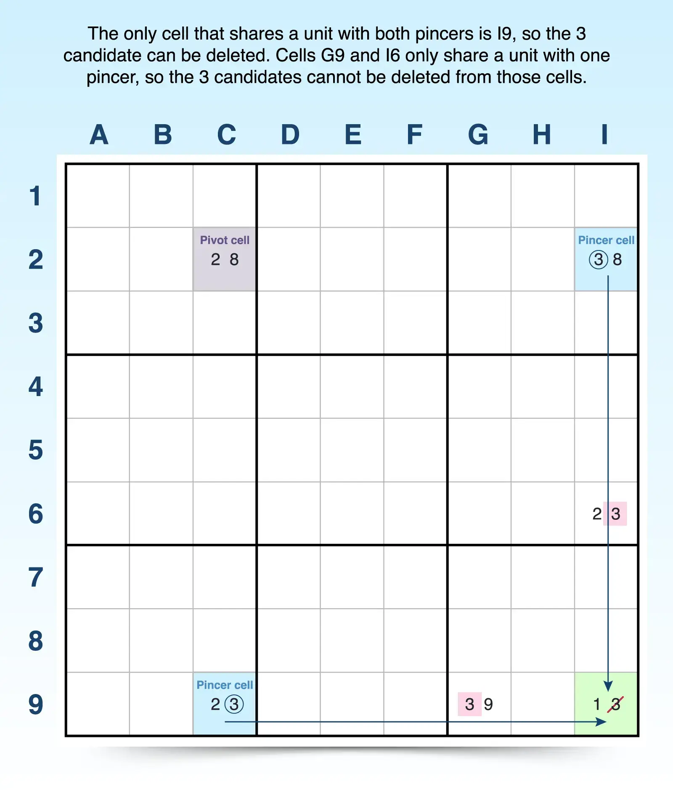
Célula pivô: A célula C2 contém apenas dois candidatos (2, 8) e compartilha um candidato com I2 (8) e C9 (2). Ela também compartilha uma unidade com I2 (linha 2) e uma unidade separada com C9 (coluna 9).
Célula de pinça 1: A célula I2 tem apenas dois candidatos (3, 8). Um candidato (8) é compartilhado com a célula pivô (C2) e um candidato (3) com a célula de pinça C9. A célula I2 compartilha uma unidade (linha 2) com a célula pivô, C2, mas não compartilha uma unidade com C9.
Célula de pinça 2: A célula C9 tem apenas dois candidatos (2, 3). Um candidato (2) é compartilhado com a célula pivô (C2) e um candidato (3) com a célula de pinça I2. A célula C9 compartilha uma unidade (coluna C) com a célula pivô, C2, mas não compartilha uma unidade com I2, a outra célula de pinça.
Possibilidades de eliminação: A célula destacada (I9) é a única que ambas as pinças conseguem enxergar — ela compartilha uma coluna com I2 e uma linha com C9. Como essa célula possui um valor 3 (o candidato compartilhado pelas células das pinças), esse candidato pode ser eliminado. Embora as células G9 e I6 possuam um candidato com valor 3, ele não pode ser eliminado dessas células porque G9 compartilha apenas uma unidade (linha 9) com uma célula da pinça (C9), e I6 compartilha uma unidade (coluna 1) com apenas uma célula da pinça (I9).
Como usar o modo candidato do Sudoku (com exemplos)
O modo de candidatos é um recurso poderoso em Sudokus eletrônicos que simula o uso de marcas de lápis em um Sudoku impresso. Ele permite marcar possíveis candidatos em cada célula com pequenos números. Acompanhar essas opções ajuda você a posicionar e eliminar candidatos à medida que avança no quebra-cabeça.
Além disso, ao marcar todas as possibilidades com o modo de candidatos, você pode encontrar facilmente o último candidato possível para uma célula ou identificar pares isolados e outros padrões que criam a base para estratégias de Sudoku.
Seja você um iniciante resolvendo quebra-cabeças fáceis ou esteja progredindo em desafios mais difíceis, usar o modo de candidatos é uma maneira eficaz de acompanhar seu progresso e resolver os quebra-cabeças com mais eficiência.
Como usar o Modo Candidato
No Sudoku Bliss, usar o modo de candidatos é simples. Basta marcar uma caixa para ativar ou desativar o modo de candidatos. Dessa forma, ao clicar em uma célula, você não está inserindo uma resposta, mas sim um candidato, uma possível resposta.
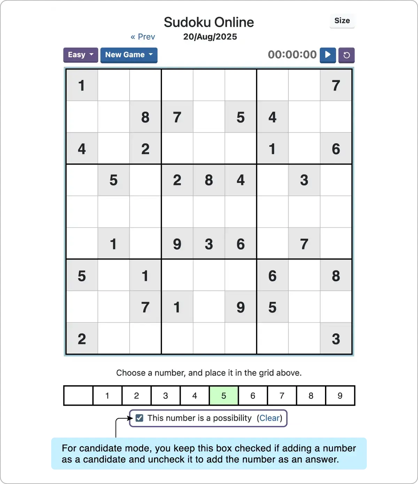
Para usar o modo de candidatos, siga estes passos:
Identifique um candidato para uma célula. Por exemplo, no bloco 3x3 superior direito, o número 5 só pode ser um candidato nas células H1 e H3, porque o 5 na linha 2 (célula F2) e o 5 na coluna G (célula G8) eliminam a possibilidade de haver 5s nessa linha ou coluna.
Marque a caixa que diz "Este número é uma possibilidade".
Destaque o número candidato na barra abaixo da grade do Sudoku. Como você precisa colocar o 5 como um possível candidato nessas duas células (H1 e H3), destaque o 5.
Clique uma vez na célula onde deseja que o candidato seja colocado. Clicar em H1 e H3 coloca um pequeno 5 no canto de cada célula. A célula verde é simplesmente o último local onde você clicou.
 Se você quiser remover um candidato de uma célula, siga o mesmo processo. Para remover todos os candidatos da grade, clique na opção “Limpar” ao lado de “Este número é uma possibilidade”.
O modo de candidatos é mais eficaz quando você consegue reduzir as possibilidades de uma célula para dois ou três candidatos, mas não consegue memorizá-las. Isso permite que você se movimente pelo quebra-cabeça para encontrar colocações e eliminações rapidamente.
Se você for iniciante, pode se ver marcando todos os candidatos em todas as células até se familiarizar com a lógica. Isso lhe dá bastante prática com a análise de unidades e a busca por padrões que auxiliam as técnicas básicas de resolução. Mas o modo de candidatos também pode ajudá-lo a aprimorar suas estratégias com métodos mais avançados, como X-wing e swordfish.
Exemplos de Modo Candidato
Usar o modo candidato é uma técnica poderosa para resolver quebra-cabeças de Sudoku, mas pode se tornar complexo e acabar sendo ainda mais confuso se você não seguir um sistema. Estas seções oferecem alguns exemplos de como usar o modo candidato que podem ajudá-lo a se manter no caminho certo.
Adicionando candidatos
Ao analisar as peças de um quebra-cabeça, você pode não descobrir imediatamente as respostas para cada célula vazia. Mas, para restringir as possibilidades, você pode adicionar candidatos para ajudar a destacar respostas, eliminações e padrões úteis para técnicas avançadas.
Por exemplo, no bloco 3x3 superior esquerdo, adicionar candidatos ajudou a descobrir que 7 era a única resposta possível para a célula B3 e que 5 só poderia ser colocado em C1. Agora, este bloco tem apenas três células sem respostas.
Se você quiser remover um candidato de uma célula, siga o mesmo processo. Para remover todos os candidatos da grade, clique na opção “Limpar” ao lado de “Este número é uma possibilidade”.
O modo de candidatos é mais eficaz quando você consegue reduzir as possibilidades de uma célula para dois ou três candidatos, mas não consegue memorizá-las. Isso permite que você se movimente pelo quebra-cabeça para encontrar colocações e eliminações rapidamente.
Se você for iniciante, pode se ver marcando todos os candidatos em todas as células até se familiarizar com a lógica. Isso lhe dá bastante prática com a análise de unidades e a busca por padrões que auxiliam as técnicas básicas de resolução. Mas o modo de candidatos também pode ajudá-lo a aprimorar suas estratégias com métodos mais avançados, como X-wing e swordfish.
Exemplos de Modo Candidato
Usar o modo candidato é uma técnica poderosa para resolver quebra-cabeças de Sudoku, mas pode se tornar complexo e acabar sendo ainda mais confuso se você não seguir um sistema. Estas seções oferecem alguns exemplos de como usar o modo candidato que podem ajudá-lo a se manter no caminho certo.
Adicionando candidatos
Ao analisar as peças de um quebra-cabeça, você pode não descobrir imediatamente as respostas para cada célula vazia. Mas, para restringir as possibilidades, você pode adicionar candidatos para ajudar a destacar respostas, eliminações e padrões úteis para técnicas avançadas.
Por exemplo, no bloco 3x3 superior esquerdo, adicionar candidatos ajudou a descobrir que 7 era a única resposta possível para a célula B3 e que 5 só poderia ser colocado em C1. Agora, este bloco tem apenas três células sem respostas.
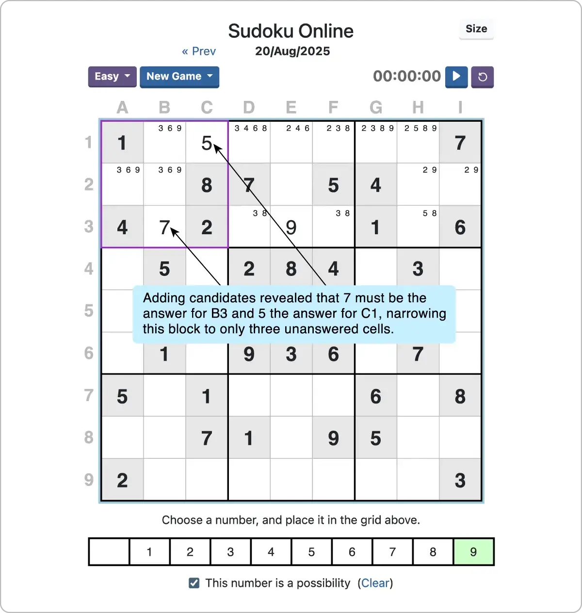
Encontrando números isolados
Adicionar candidatos ajuda você a encontrar números isolados, sejam eles visíveis ou ocultos. Um número isolado visível será o único candidato em uma célula de uma unidade, enquanto um número isolado oculto aparecerá apenas uma vez como candidato em uma unidade, podendo estar oculto por outros candidatos na célula.
Por exemplo, a célula H3 tem dois candidatos listados (5 e 8). Mas o 5 aparece como candidato apenas uma vez na linha 3, depois que todos os candidatos foram marcados. Portanto, 5 deve ser a resposta para H3.
Além disso, a célula G1 é o único lugar nesse bloco 3x3 que tem o 3 como candidato. Mesmo que outros candidatos apareçam na célula, esse é o único lugar onde o 3 pode estar nesse bloco, tornando o 3 a resposta para essa célula.
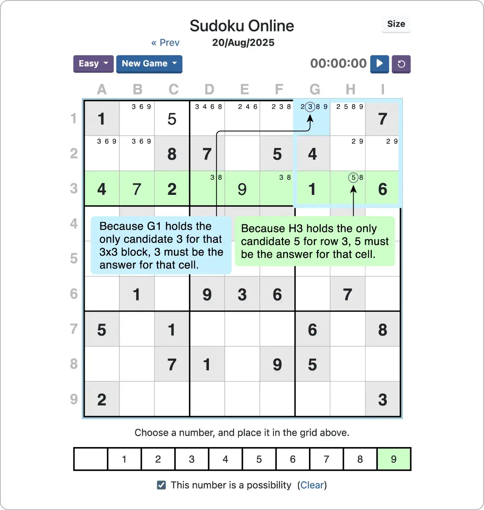
Domine a técnica do Sudoku W-W: exemplos e dicas
A Asa W é uma técnica de eliminação no Sudoku mais fácil de identificar do que outros padrões, como a Asa X ou a Asa Y. É uma cadeia composta por quatro células que atende aos seguintes critérios:
A primeira e a última célula da cadeia devem ser células binárias idênticas contendo os candidatos x e y. Essas células não podem compartilhar uma linha, coluna ou bloco.
As duas células do meio devem ser um par conjugado com uma forte ligação entre x ou y. Um par conjugado significa que são as únicas duas células na mesma unidade que contêm o número candidato x ou y.
Cada uma das células do meio deve compartilhar uma unidade com uma das células binárias.
Isso cria uma cadeia lógica que pode ajudar a eliminar candidatos em células que ambas as células binárias podem ver. Usar a Asa W pode ajudar a resolver todos os tipos de quebra-cabeças de Sudoku, dos mais difíceis aos mais complexos. Neste tutorial de Sudoku, explicaremos como identificar Asas W e compartilharemos exemplos.
Como encontrar W-Wings
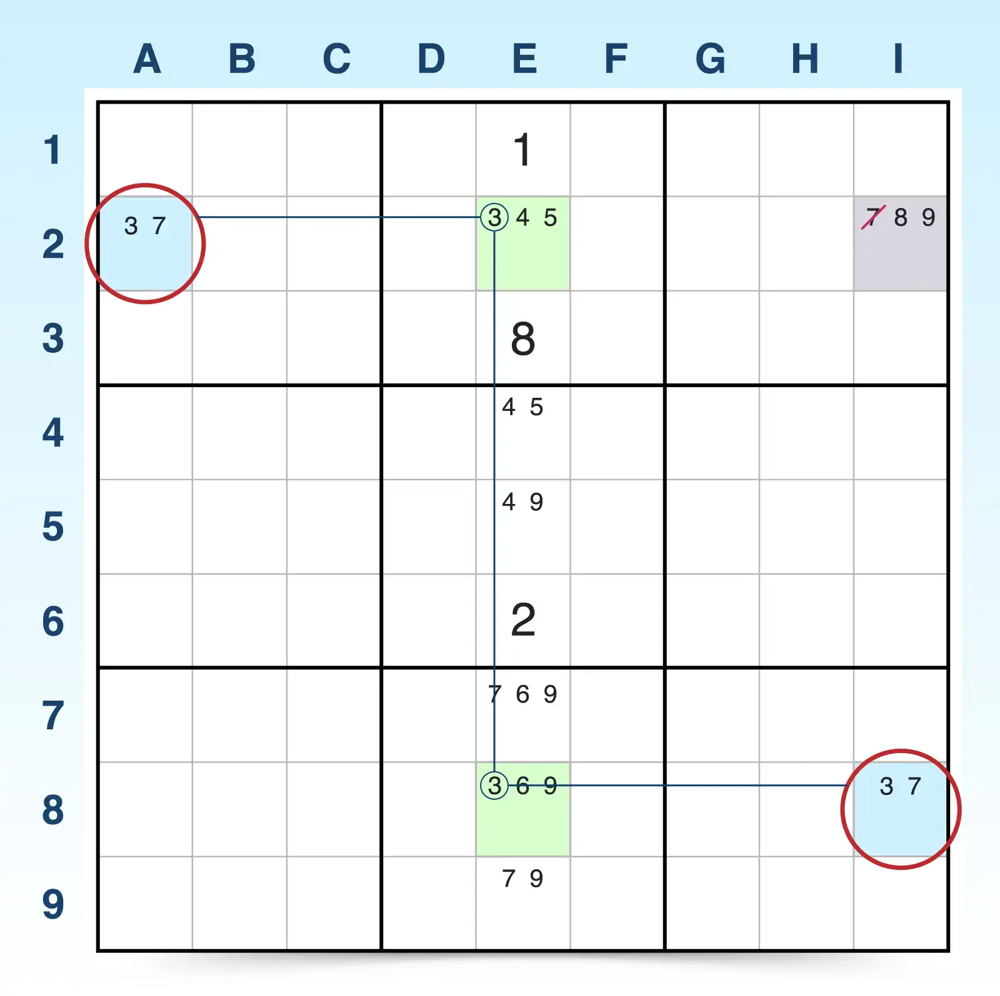
Siga estes passos para encontrar uma asa W no seu Sudoku.
Identifique duas células com dois valores iguais (x e y). Essas células não devem estar visíveis uma para a outra, ou seja, não devem estar na mesma linha, coluna ou bloco.
Encontre mais duas células com um par conjugado fortemente ligado de x ou y. Cada uma dessas células ligadas deve ser visível para uma das células com dois valores. Lembre-se: um par fortemente ligado significa que um determinado número candidato aparece apenas duas vezes dentro de uma unidade; portanto, se um for falso, o outro deve ser verdadeiro.
Analise a cadeia lógica. O par fortemente ligado é formado pelo candidato x ou y. Neste exemplo, usaremos x. Se x for verdadeiro em uma célula do par fortemente ligado, ele deve ser falso na outra célula do par. Portanto, x não pode ser verdadeiro em uma das células com dois valores, tornando uma delas y. Logo, qualquer célula que veja ambas as células com dois valores não pode ser y.
Elimine os candidatos. Como y deve ser verdadeiro em uma célula bivalorada ou na outra, não pode existir em nenhuma célula que veja ambas as células bivaloradas. Se existir, você pode eliminá-lo como candidato nessas células.
Exemplos de W-W
Agora que você tem uma ideia geral de como a técnica é usada, trabalhe conosco nesses exemplos para consolidar seu entendimento.
Exemplo W-Wing 1 - A2 e I8 têm candidatos bivalor idênticos (3, 7) em células que não se veem.
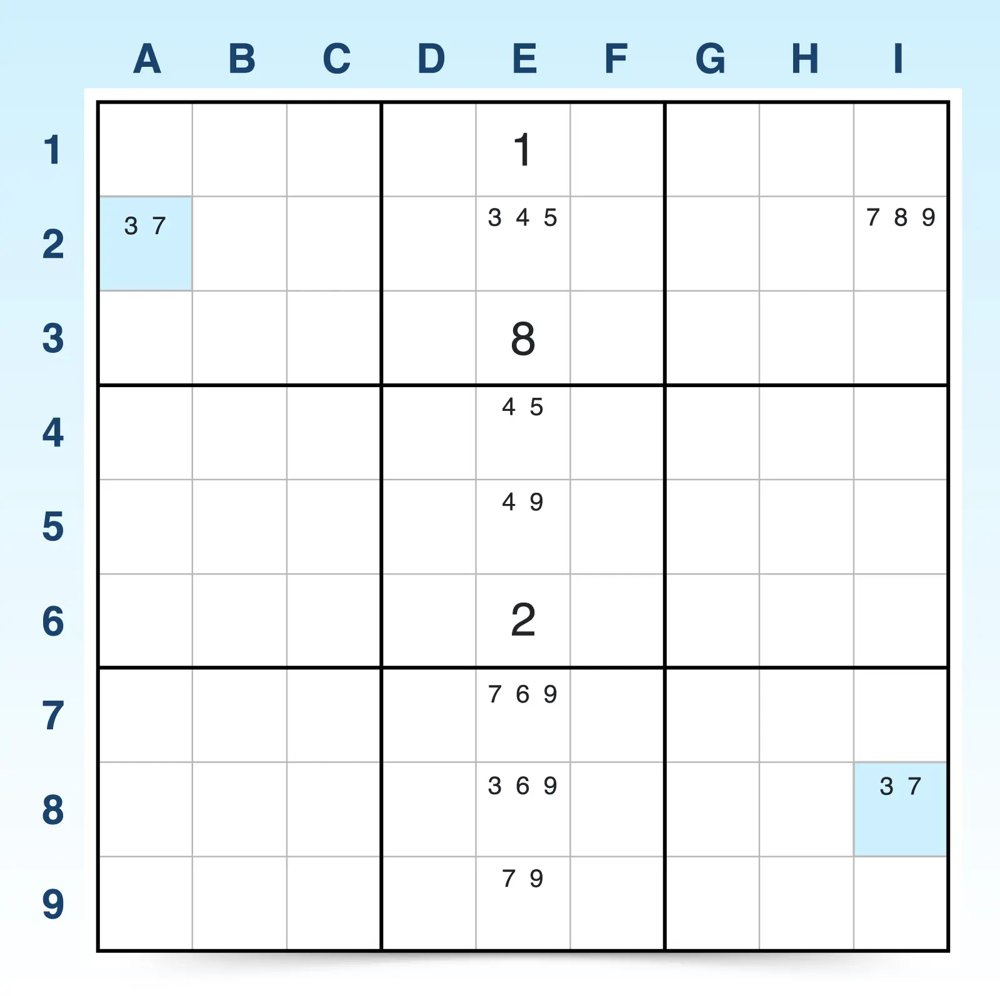
A coluna E possui um par conjugado de 3s fortemente ligado em E2 e E8. E2 vê uma das células bivaloradas (A2) e E8 vê a outra célula bivalorada (I8). Isso forma uma cadeia ligada.
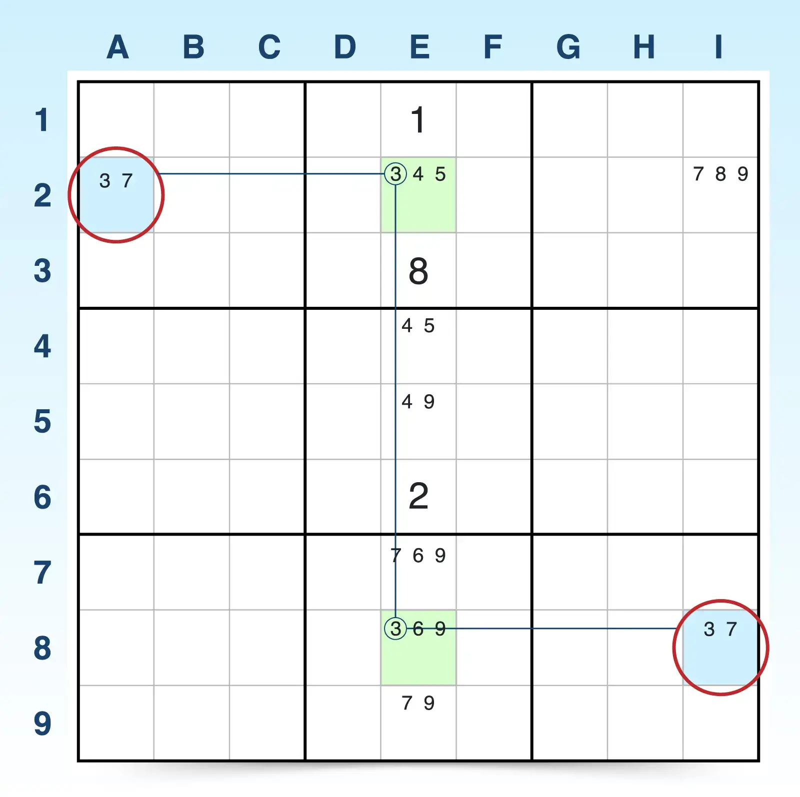
Agora você pode usar a lógica para determinar se a eliminação de candidatos é possível.
Se E2 for 3, então E8 não é 3. Portanto, A2 é 7.
Se E8 for 3, então E2 não é 3. Portanto, I8 é 7.
De qualquer forma, uma célula bivalorada deve ser 7.
Como um bivalorado deve ser 7, 7 candidatos podem ser eliminados em quaisquer células que vejam ambas as células bivaloradas. Neste caso, o 7º candidato pode ser eliminado em I2.
 Exemplo W-Wing 2 - A5 e C8 têm candidatos bivalor idênticos (2, 4) em células que não se veem mutuamente.
Exemplo W-Wing 2 - A5 e C8 têm candidatos bivalor idênticos (2, 4) em células que não se veem mutuamente.
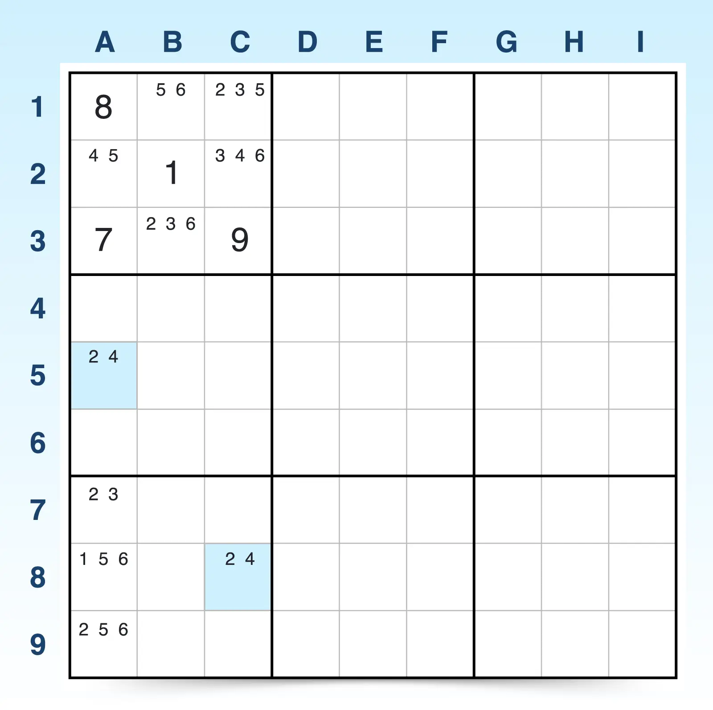
O bloco superior esquerdo possui um par conjugado de 4s fortemente ligado em B2 e C2. A2 vê uma das células bivaloradas (A5) e C2 vê a outra célula bivalorada (C8).
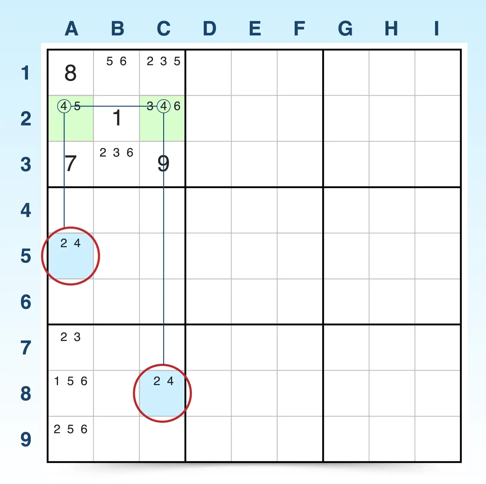
A seguinte lógica confirma que a eliminação é possível.
Se A2 for 4, então C2 não é 4. Portanto, A2 é 2.
Se C2 for 4, então A2 não é 4. Portanto, C8 é 2.
De qualquer forma, uma célula bivalorada deve ser 2.
Como uma célula bivalorada deve ser 2, os 2 candidatos podem ser eliminados em quaisquer células que contenham ambas as células bivaloradas (A7, A8 e A9). Como existem 2s em A7 e A9, elas podem ser eliminadas.
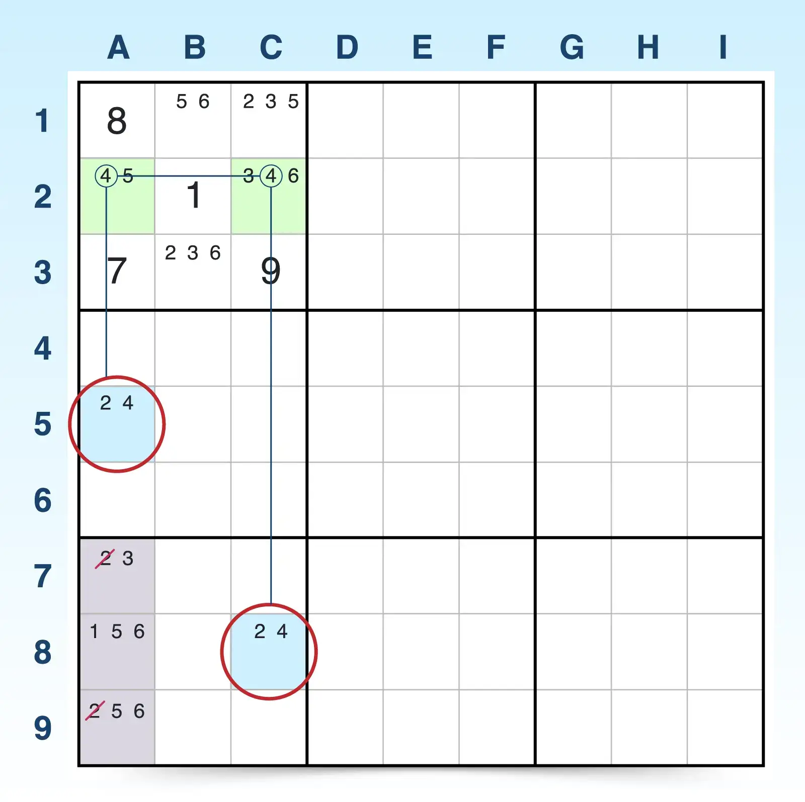
Técnica de Sudoku X-Wing: Casos de Uso e Exemplos
Se você consegue resolver Sudokus fáceis num instante, então está pronto para enfrentar desafios mais difíceis e usar estratégias avançadas como a técnica X-wing. Adequada para Sudokus de nível intermediário a difícil, essa técnica consiste em focar em um único candidato que aparece em um padrão, permitindo eliminar candidatos e resolver os quebra-cabeças com mais rapidez e facilidade.
Como Encontrar X-Wings
A técnica X-wing é uma estratégia de Sudoku que recebe esse nome devido ao padrão em forma de X que forma quando visualizada na grade do Sudoku, criando um ciclo de quatro pontos. Ela ajuda a eliminar candidatos identificando onde um candidato específico está restrito a exatamente duas células possíveis em duas linhas ou colunas.
Como o candidato deve aparecer em uma dessas duas células em cada linha (ou coluna), ele não pode aparecer em nenhuma outra célula dentro das mesmas colunas (ou linhas). Isso permite que todas as outras ocorrências desse candidato nas colunas ou linhas afetadas sejam removidas, o que pode levar a uma reação em cadeia de respostas ou eliminações.
Por exemplo, na grade abaixo, o candidato número 3 ocorre apenas duas vezes nas linhas 1 e 5, mas ocorre várias vezes nas colunas F e H. Sempre que o 3 ocorrer nas colunas F e H fora do padrão X-wing (F2, F6, H4, H6), ele pode ser eliminado.
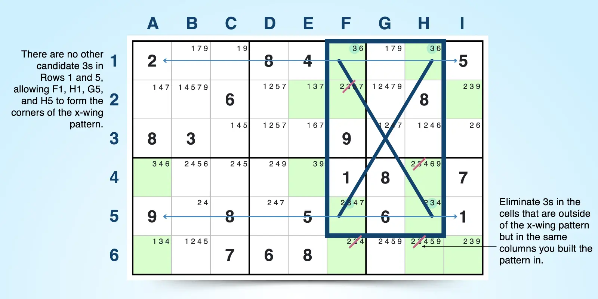
Uma X-wing pode ser orientada de duas maneiras: horizontalmente (linhas) ou verticalmente (colunas). A orientação se refere à quantidade de candidatos iguais presentes em duas linhas ou duas colunas.
A orientação da X-wing determina onde os candidatos podem ser eliminados. Em uma X-wing horizontal, os candidatos são eliminados das duas colunas em comum, e em uma X-wing vertical, os candidatos são eliminados das duas linhas em comum.
Retângulos únicos no Sudoku: 5 tipos e exemplos
Um retângulo único no Sudoku é um padrão que ocorre quando dois candidatos aparecem em duas colunas e duas linhas dentro de apenas dois blocos, criando os cantos de um retângulo e resultando em duas soluções possíveis se não forem resolvidas. Isso viola a regra de unicidade no Sudoku, e você deve encontrar uma maneira de quebrar o padrão para que haja apenas uma solução.
Retângulos únicos (RU) são divididos em vários tipos diferentes, desde os padrões mais básicos até os mais complexos. Portanto, você pode encontrar retângulos únicos em quebra-cabeças de todos os níveis de dificuldade, desde Sudokus fáceis até os mais difíceis, como os de nível especialista e maligno. Encontrar um retângulo único e quebrar o padrão ajuda você a eliminar candidatos ou encontrar respostas para células específicas, dependendo do tipo encontrado.
Use as dicas deste post para encontrar diferentes tipos de retângulos únicos e resolver mais quebra-cabeças ao jogar Sudoku.
Como encontrar retângulos únicos
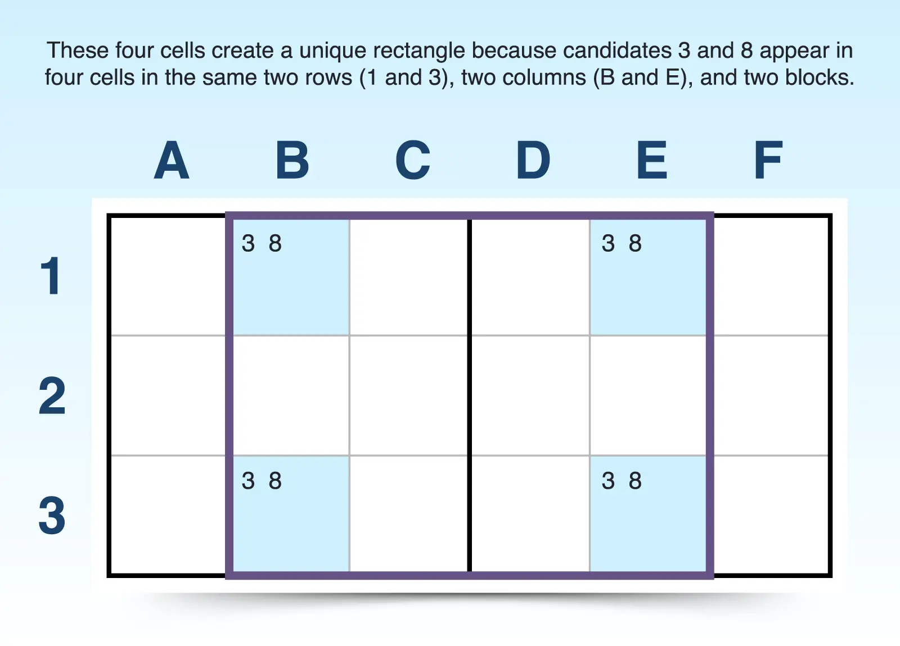
Para encontrar um retângulo único, siga estes passos:
Encontre um par de candidatos correspondentes em duas células da mesma coluna ou linha. Esses candidatos não precisam ser os únicos nas células, nem precisam estar limitados a essas duas células, como em pares isolados. Por exemplo, as células B1 e B3 contêm os candidatos 3 e 8 na coluna B.
Encontre o mesmo par em outra linha ou coluna. Se o primeiro par estiver na mesma linha, procure outro par em uma linha diferente, mas nas mesmas colunas. Se estiverem na mesma coluna, procure em outra coluna, mas nas mesmas linhas. Essas quatro células formarão os quatro cantos de um retângulo. Por exemplo, as células E1 e E3 também contêm 3 e 8, correspondendo às linhas de B1 e B3.
Certifique-se de que as quatro células estejam contidas em apenas dois blocos 3x3. As células em um retângulo único só podem aparecer em dois blocos 3x3. Portanto, verifique se as células seguem essa regra. Por exemplo, as células B1 e B3 estão em um bloco 3x3, e E1 e E3 estão em um segundo bloco 3x3.
Essas quatro células formam um retângulo único, um padrão que permitiria múltiplas soluções, o que viola a regra de unicidade no Sudoku, pois se B1 for 3, B3 e E1 devem ser 8, tornando E3 igual a 3. Mas se B1 for 8, as respostas mudam e o quebra-cabeça não pode ter mais de uma solução.
Isso resulta no que alguns chamam de "retângulo mortal", pois ele inviabiliza o quebra-cabeça. Esses padrões mortais não podem existir, então, se você encontrar um, pode usar a lógica para eliminar candidatos e quebrar o padrão.
Um erro comum ao usar retângulos únicos
Um erro comum na busca por um retângulo único é esquecer que as células não podem violar a regra dos dois blocos do terceiro passo. Se, por exemplo, as células formam um retângulo, mas aparecem em quatro blocos diferentes, essas quatro células não propõem duas soluções diferentes.
Por exemplo, C2, C4, F2 e F4 parecem formar um retângulo único, mas, como estão em quatro blocos 3x3 diferentes, violam a regra do Passo 3. No entanto, se você encontrar esse padrão em quatro blocos diferentes, não terá perdido tempo. Você pode muito bem ter encontrado outro padrão útil: o X-wing.
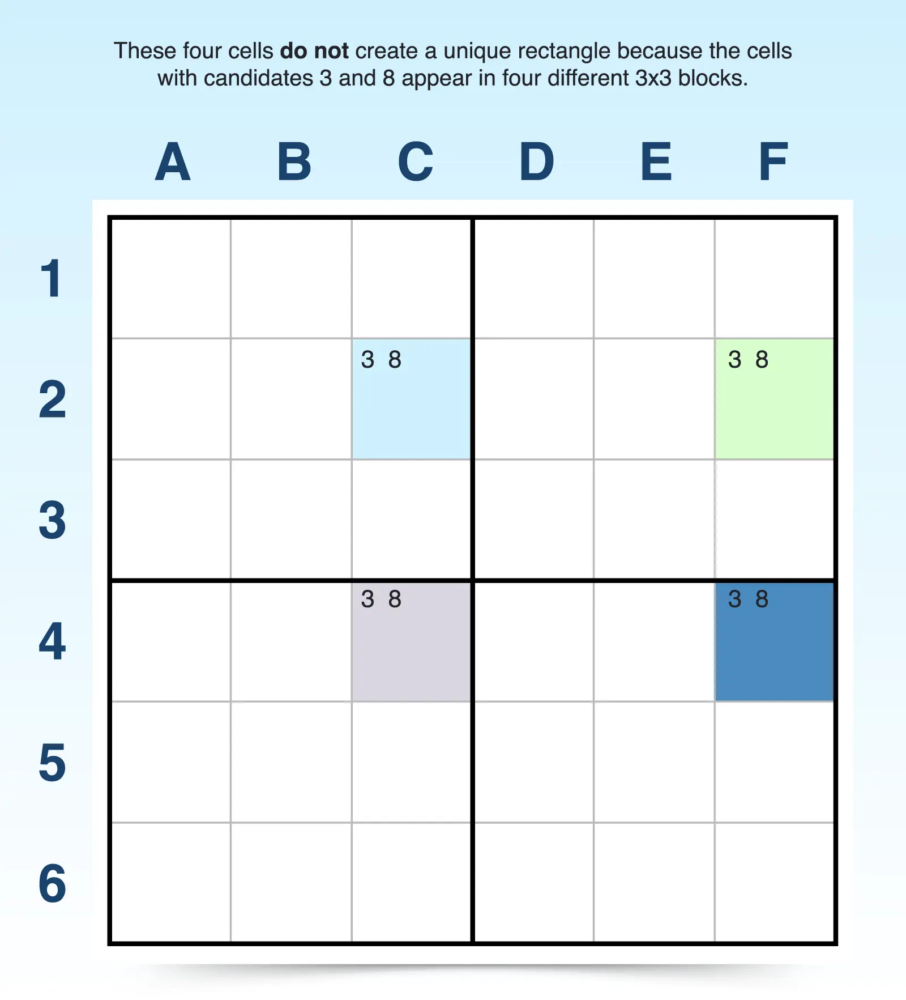
Exemplos de tipos de retângulos únicos
Se você encontrar um padrão em um quebra-cabeça de Sudoku que resulta em mais de uma solução, você precisa encontrar maneiras de quebrar esse padrão, também conhecido como "padrão mortal", e é aí que identificar os diferentes tipos de retângulos únicos pode ajudar.
Os diferentes tipos oferecem maneiras diferentes de quebrar o padrão mortal e descobrir respostas para as células ou eliminar candidatos. Essa técnica de resolução muitas vezes pode usar um atalho por meio de outras técnicas de eliminação lógicas, porém mais complicadas, ajudando você a resolver quebra-cabeças com mais eficiência e evitar possíveis padrões mortais.
Observe que, se você encontrar um retângulo único composto por pares isolados, você errou em algum lugar do quebra-cabeça, pois está preso com quatro células que podem formar duas soluções diferentes.
Tipo 1 - Um retângulo único do Tipo 1 é o mais básico, e todos os outros tipos se baseiam nessa estrutura. É provável que você o encontre com mais frequência em quebra-cabeças para iniciantes. Nesse tipo, três células têm apenas os mesmos dois candidatos, e a quarta célula tem um ou mais candidatos adicionais. Por exemplo, B1, B3, E1 e E3 têm os mesmos dois candidatos em duas linhas, duas colunas e dois blocos, mas E1, o quarto canto do retângulo, tem candidatos adicionais (1, 5).
Você pode quebrar o padrão e criar uma solução única por causa dos candidatos adicionais. Como 3 e 8 não podem ser a resposta em E1 sem abrir caminho para duas soluções, você pode eliminar com segurança os candidatos comuns (3, 8) de E1.
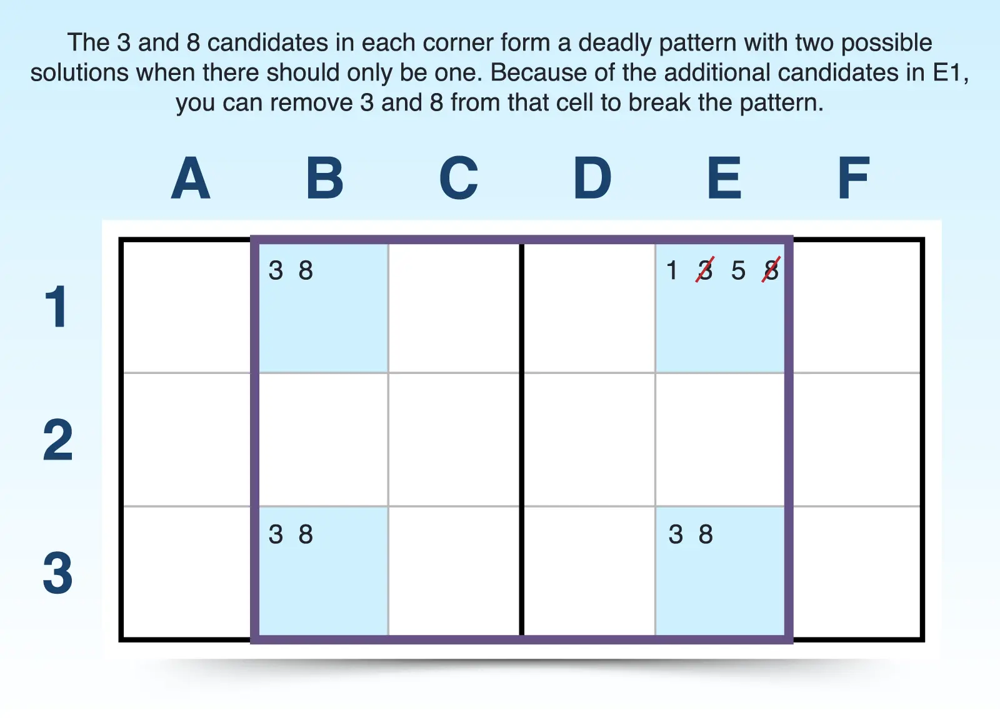
Tipo 2 - Um retângulo único do Tipo 2 é semelhante ao do Tipo 1, mas possui duas células com o mesmo candidato extra, estando essas duas células na mesma linha ou coluna. Em outras palavras, as duas células não são diagonais entre si.
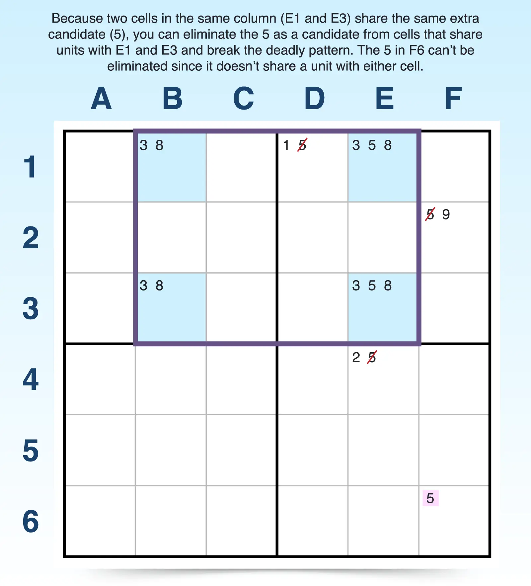
Por exemplo, B1, B3, E1 e E3 têm os mesmos dois candidatos (3, 8) em todas as quatro células. Mas E1 e E3 têm o mesmo candidato extra (5), e essas duas células estão na mesma coluna.
Alguns se referem às duas células com dois valores (uma com apenas dois candidatos) como "quadrados do chão" e às duas células com candidatos extras como "quadrados do teto".
Como as duas células com um candidato extra nesse tipo estão na mesma linha ou coluna, o padrão pode ser quebrado — o candidato extra forma uma ligação forte porque deve ser a resposta em uma das células daquela unidade, agindo como um par conjugado. Isso significa que você pode eliminar o candidato extra de outras células que ambas as células veem (células que compartilham uma unidade com elas), porque ele não pode ser um candidato nessas células.
Por exemplo, E1 e E3 têm o mesmo candidato extra e estão na mesma coluna. Portanto, o 5 deve ser a resposta em uma dessas células para criar uma solução única. Portanto, o número 5 não pode ser uma resposta em nenhuma outra célula com a qual E1 e E3 compartilhem uma unidade.
Assim, os números 5 em D1 e F2 podem ser eliminados, pois compartilham o mesmo bloco 3x3 com E1 e E3, e o número 5 em E4 pode ser eliminado, já que compartilha a mesma coluna com E1 e E3. No entanto, o número 5 em F6 não pode ser eliminado, pois não compartilha uma unidade com essas duas células.
Quando as duas células que compartilham o candidato extra estão no mesmo bloco 3x3, é possível eliminar muito mais candidatos do que quando compartilham apenas uma linha ou coluna.
Tipo 3 - Retângulos únicos do Tipo 3 adicionam outra camada ao Tipo 2. Assim como no Tipo 2, duas das quatro células contêm candidatos extras e compartilham a mesma unidade. Mas no Tipo 3, deve haver dois candidatos extras diferentes, e eles podem aparecer em uma ou em ambas as células. Por exemplo, uma célula pode ter os dois candidatos extras, ou cada célula pode ter um deles.
No quebra-cabeça abaixo, B1 contém o primeiro candidato extra (4) e B3 tem um segundo candidato extra (9). Portanto, neste retângulo único, dois candidatos extras aparecem em duas células na mesma unidade (coluna B).
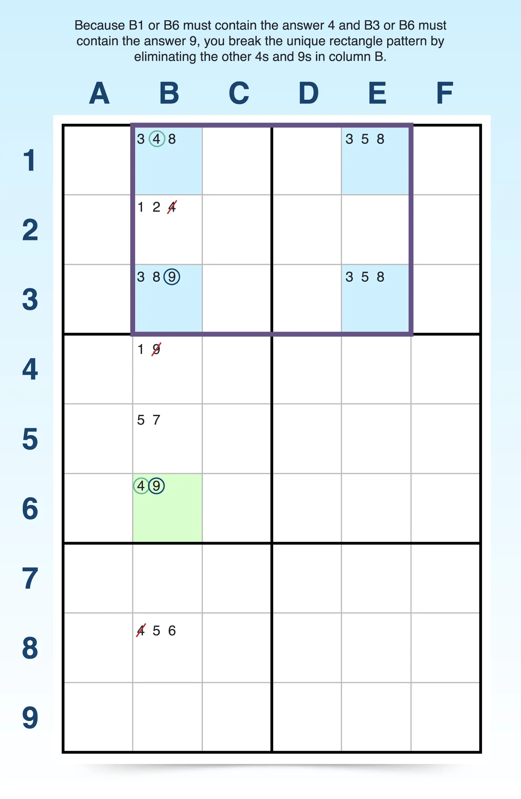
Esses candidatos extras podem ajudar a quebrar o padrão mortal, mas apenas sob as condições certas. Para acionar as eliminações, você também precisa encontrar uma célula com dois valores em outra célula da mesma unidade que contenha ambos os candidatos extras. Por exemplo, B6 é uma célula com dois valores que contém ambos os candidatos extras (4, 9).
Quando essa célula com dois valores existe, você pode tratar os candidatos extras no retângulo e a célula com dois valores como um conjunto bloqueado. Isso permite eliminar os mesmos dois candidatos de quaisquer células contidas nessa unidade e quebrar o padrão mortal.
Por exemplo, 4 deve ser uma resposta em B1 ou B6, e 9 deve ser uma resposta em B3 ou B6. Isso significa que, na coluna B, os valores 4 e 9 podem ser eliminados em outras células dentro dessa unidade.
Tipo 4 - Os retângulos únicos do Tipo 4 oferecem a oportunidade de eliminar um dos candidatos comuns nas células que compõem o retângulo único. Nessa formação, duas das células no padrão do retângulo único que compartilham a mesma unidade (linha ou coluna) devem ser um par isolado, e as outras duas devem ter candidatos extras, que podem ser numerais iguais ou diferentes.
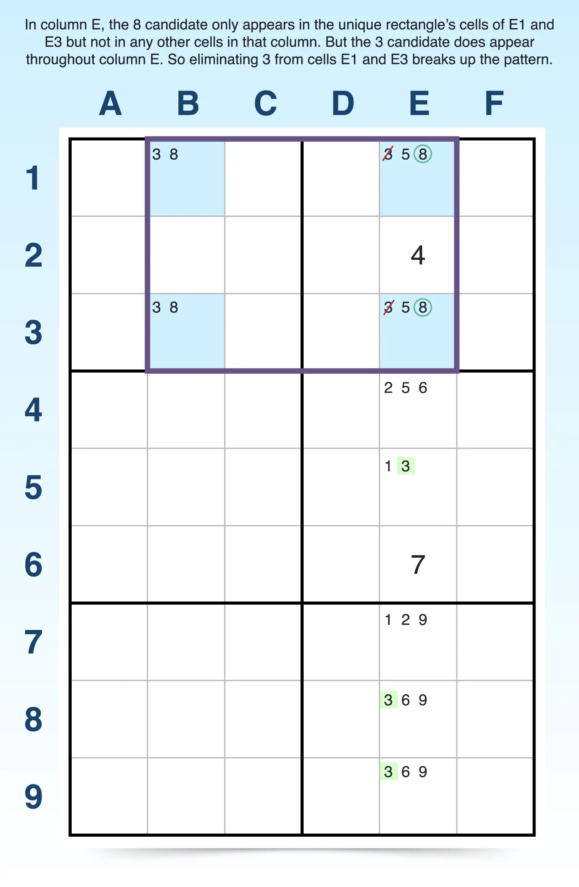
Para encontrar uma eliminação, concentre-se na unidade (linha ou coluna) compartilhada pelas duas células com candidatos extras. Se um dos candidatos compartilhados aparecer em outro lugar nessa unidade, mas o outro não, então aquele que não aparece deve ser a solução correta para uma das duas células no retângulo único. Isso permite eliminar o outro candidato de ambas as células.
Por exemplo, na coluna 3, o número 3 aparece fora das células do retângulo, mas o 8 não. Portanto, o 8 deve ser a solução em E1 ou E3, o que significa que o 3 pode ser eliminado de ambas as células.
Tipo 5 - Os retângulos únicos do Tipo 5 são semelhantes aos do Tipo 2, mas em vez de as duas células que compartilham o candidato extra estarem na mesma linha ou coluna, elas estão diagonalmente opostas uma à outra (estão em cantos opostos do retângulo). Por exemplo, B3 e E1 contêm o mesmo candidato extra (5).
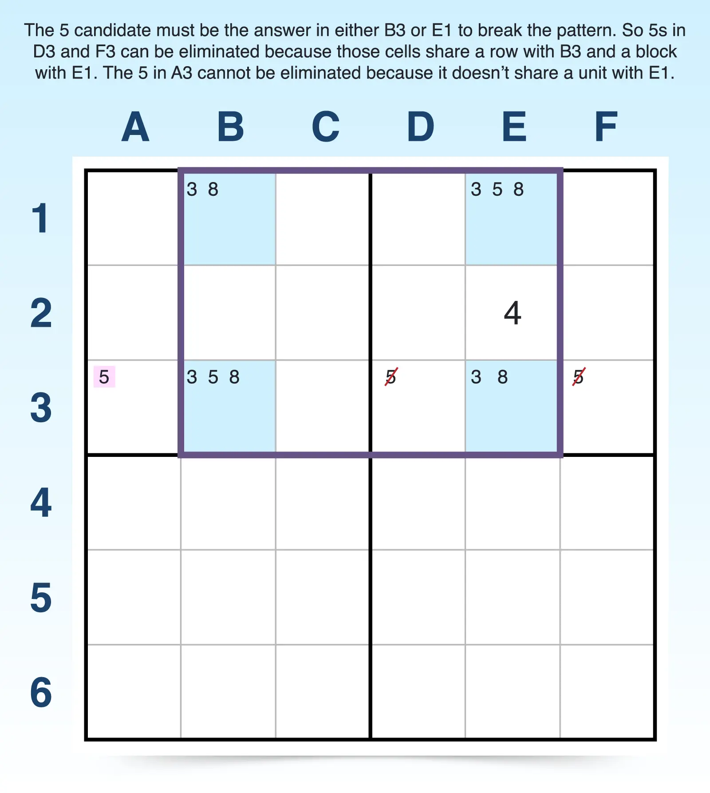
Semelhante ao Tipo 2, você pode eliminar o candidato extra de qualquer célula que possa ver ambas as células diagonais. Por exemplo, D3 e F3 veem B3 (mesma linha) e E1 (mesmo bloco), então o 5 pode ser eliminado dessas células. No entanto, o candidato 5 em A3 compartilha apenas uma unidade (linha 3) com B3 e não compartilha uma unidade com E1, portanto não pode ser eliminado.
Depois de dominar as estratégias mais básicas do Sudoku, os retângulos únicos oferecem variantes suficientes para serem úteis em diversos níveis de dificuldade. Seja você um iniciante aprimorando suas habilidades para resolver quebra-cabeças de nível médio ou um jogador avançado trabalhando em quebra-cabeças mais complexos, identificar e usar diferentes tipos de retângulos únicos pode ajudá-lo a resolver mais quebra-cabeças com mais eficiência!
11 estratégias avançadas de Sudoku e exemplos
Quebra-cabeças de Sudoku para especialistas não exigem truques, mas sim estratégias avançadas e lógica sólida. Se você precisa de novas táticas para resolver Sudokus difíceis e além, estas técnicas avançadas serão úteis.
Este artigo apresenta 11 técnicas avançadas de Sudoku, passo a passo, para que você possa resolver quebra-cabeças desafiadores com facilidade. Agrupadas por tipo de lógica, você encontrará a melhor técnica para o quebra-cabeça difícil que está tentando resolver.
Estratégias de Sudoku baseadas em asas
As estratégias de eliminação de candidatos utilizam pequenos padrões de candidatos relacionados, geralmente em duas ou três células, para realizar eliminações com base na lógica condicional (se-então). Essas técnicas frequentemente se baseiam em dois tipos de células:
Células bivaloradas: Células com apenas dois candidatos
Células trivaloradas: Células com apenas três candidatos